WUSON的CISSP課後筆記整理-葉柏毅Alex Yeh
相關連結
CISSP考試心得-Alex Yeh
AlexYeh心智圖(點我下載)
心智圖才是本篇精華，記得點選上方連結
AlexYeh 心智圖PDF版(點我下載)
關於我
葉柏毅 Alex
Linkedin：https://www.linkedin.com/in/alrex5401/
Structure
Architecture
Framework
Approach
Methodology
Domain 口訣
Domain 1. Security and Risk Management C、I、A+GRC(安全和風險管理）
Domain 2. Asset Security 盤點、分類、保護（資產安全）
Domain 3. Security Architecture and Engineering 時時都安全、處處都安全（安全架構和工程）
Domain 4. Communication and Network Security 處處都安全（通信及網路安全）
Domain 5. Identity and Access Management (IAM) I + 3A（身分識別及存取控制）
Domain 6. Security Assessment and Testing 查驗、訪談、測試（安全評鑑及測試）
Domain 7. Security Operations 日常維運、持續改善（安全維運）
Domain 8. Software Development Security 時時都安全、處處都安全（軟體開發安全）
美國法定目標（FISMA）/ 資通安全法
CIA
Ｃ機密性：資料不被偷
Ｉ完整性：資料不被竄改
Ａ可用性：資料隨時可用
Integrity完整性
Data Integrity（資料完整性）
Authenticity（資料真偽；真實性）
Non-repudiation 不可否認性（法律上）：傳送方不能否認未傳收；接受方不能否認未收到
FISMA
NIST
FIPS 199
NIST SP 800
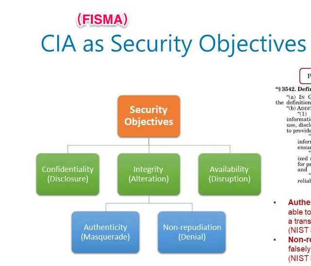
資產Asset
資產Asset：有價值Value的東西，且值得保護
Assets 通常指資訊系統
* 資料
* 電腦系統
* 操作系統
* 軟體
* 網路
* 資料中心（機房）
* 人（最重要）
* 業務流程
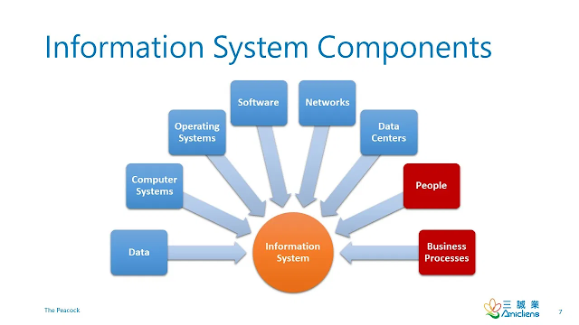
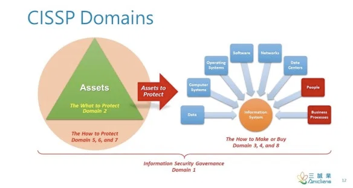
資安目標
資安目標（定義）：
透過安全管制措施，保護資訊資產不受到危害，以達到CIA目標
進而支持組織的業務流程
將安全融入組織業務流程（人事/採購），產銷人發財
支持組織的「產品」及「服務」持續交付
為公司創造價值，實現公司的使命及願景
公司最高經營階層的管理作為就叫做治理.
管理是達成目標的一套有系統的方法; 最常用的方法是PDCA.
治理的目標是創造價值,
戰略(strategy)是達成治理目標的高階計畫, 高階主管必須透過下達政策(policy)指示來執行戰略.
治理：經營高層（董事會+高階主管）的管理作為。（治理目標：創造價值），經營高層的計畫書：戰略。戰略怎麼落實執行：政策
管理：達成目標的一套有系統的方法（PDCA）
達到目標的方法：
Plan
Do
Check
Act
目標Goals/Objectives：
Specific（明確的）
Measurable（可衡量的）
Achievable（可達成的）
Relevant（相關的）
Time-bound（有時限的）
治理目標：創造價值
經營高層的計畫書：戰略
戰略怎麼落實執行：政策
InfoSec Governance (CISM)
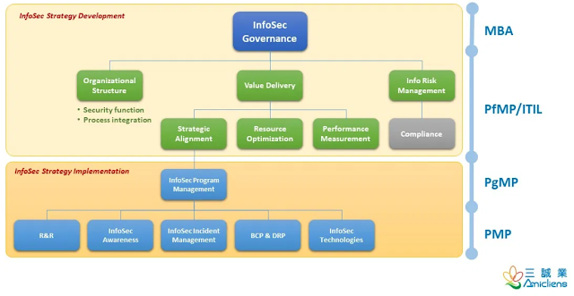
Governance Structure
CISO，如果與稽核單位報告，則稽核單位將會喪失獨立性
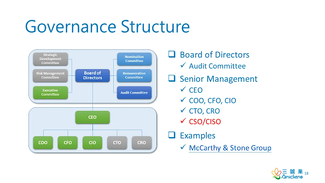
戰略發展
Strategic Development 戰略發展
未來目標與現在程度的落差進行Gap Analysis，就是Road MAP
需要Resources資源及遇到Constraints限制
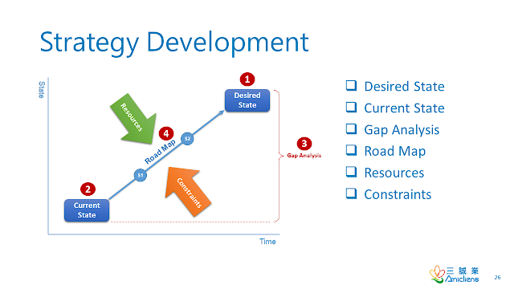
戰略投資組合
戰略投資組合(Strategy Portfolio)
戰略(strategy)、投資組合(portfolio)、計畫(program)與專案(project)的關係
將戰略目標，拆分成各項投資組合，實現其戰略價值，進一步證明其投資報酬率（ROI）。
其投資組合由計畫(program)或專案(project)的執行結果達成其效果（效益、好處）。
部分大型計畫會拆分成專案，以各項專案輸出達成計畫之結果。
Values 價值
Outcomes and Benefits 結果與好處
Outputs 輸出
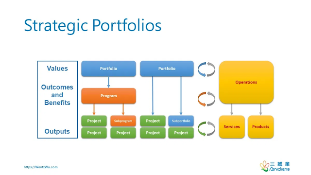
政策框架
政策框架（Policy Framework），都是強制性的
1. Policies 政策
1. Standards 標準
1. Procedures 程序
1. Guidelines 指引（option）
專案
業務企畫案(business case)：將企劃/想法，透過成本效益分析後並透過高層立案後的專案。
立案 (Charter) (根據專案章程)
* 之前要做 成本效益分析 Cost/Benift
* 成本效益分析後的產出 Business Case
* 兩案併呈，候選案 (Alternative)
* 如果可以做、值得做，最後簽過才會立案
* 之後才會稱為專案
Accountability 扛責任
Responsibility 事情做好的責任
立案 (Charter）
候選案 (Alternative)
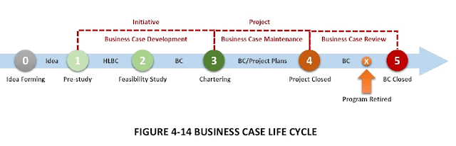
Scope Creep 範疇潛變：不受控的範圍變化
* 「範疇潛變」係在專案進行過程中發生未經授權或未加以控制的範疇變更。未走公司的標準變更管理程序。
變更管理Change Management：變更BaseLine
* Baseline：被核定的結果
* 被核定過東西就是baseline. 常見的基礎有: scope, schedule, cost/budget, controls, configruations....
變更管理的標的：baseline
* 重點：申請&核准
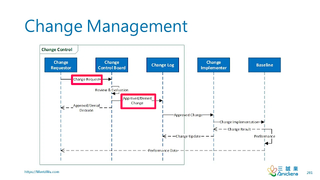
平衡計分卡 Balanced Scorecard（BSC）
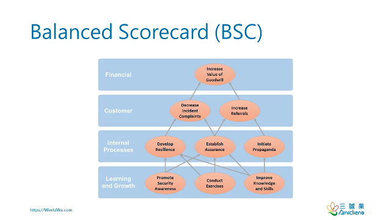
風險
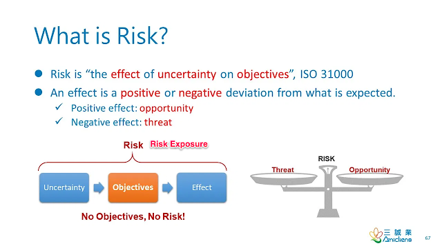
風險：影響目標達成的不確定因素
管理：達成目標的一套有系統的方法（PDCA）
風險管理目標：經營階層所能接受的殘餘風險
沒有目標的風險，應只是指危險，而非風險
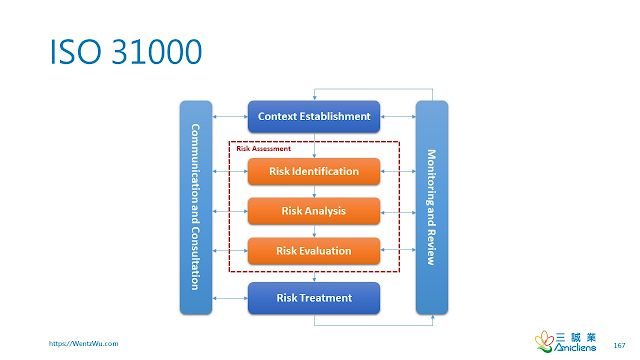
風險管理：ISO 31000
* 風險評鑑 Risk Assessment
* 風險識別 Risk Identification（找風險）
* 目標（列表）
* 風險登錄表（Risk Register）
* 風險分析 Risk Analysis
* 不確定因素/機率
* 影響
* 風險曝險值Risk exposure
* 量化分析
* 質化分析
* 風險評估 Risk Evaluation
* 決定/判斷decisions是否進行風險處置
* 順位Priorities
* 風險處置 Risk Treatment(ATMA)
* Avoid避免: 放棄原本要做的事情
* Transfer 轉移：第三方風險轉移。如，買資安險。風險可以轉移，但責任不行。
* 保險
* 外包
* Mitigate緩解：處理不確定因素(降低發生可能性)，或處理影響。
* Accept接受：考量成本效益分析，僅留在風險登錄表。
風險識別最重要的應注意事項為何?
* 確認目標（列表）
* 風險登錄表（Risk Register）
風險分析在分析什麼? 風險分析的結果是什麼? 有那二種主要的風險分析方法?
1. 分析不確定因素（機率）及影響
1. 分析結果是風險曝險值Risk exposure
1. 分析方法分「量化分析」及「質化分析」
何謂風險評估(evaluation)? 何謂風險評鑑(assessment)?
* 風險評估 Risk Evaluation：決定/判斷是否進行風險處置，並排處置順位
* 風險評鑑 Risk assessment：進行風險識別、風險分析及風險評估
風險處置(treatment)又稱風險回應(response), 若以威脅的角度來看, 其主要的方法或策略有那四種?
* Avoid避免
* Transfer 轉移
* Mitigate緩解
* Accept接受
Residual Risk 殘餘風險
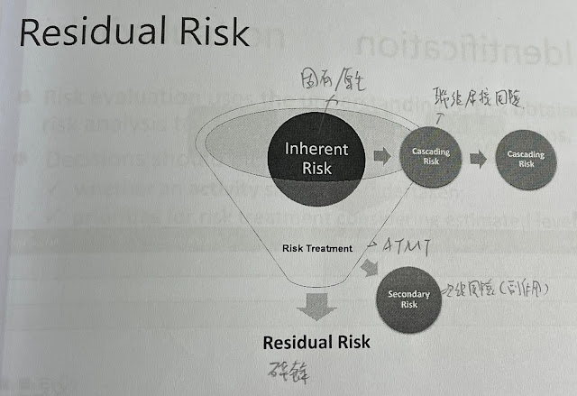
Risk Appetite 風險胃納量
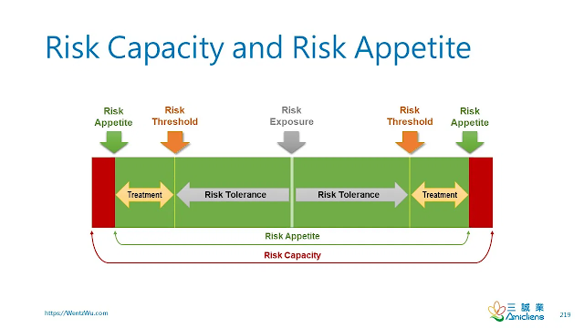
NIST的一般風險模型(generic risk model)有那些主要的元素?
* Source（Ｗho）、Event（What）、Vulinerabiliy（利用何種弱點）、Impact（影響）
* 威脅情境(scenario)：一個威脅來源(Threat Source)對應到一個威脅事件(Threat Event)的組合
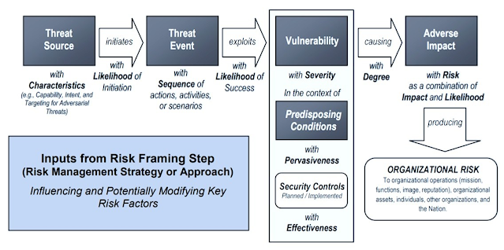
Business Processes
Human Resources
員工召募的步驟
-
建立職責描述 Job Description
* 職責分離 (seperation of duties)- 將關鍵敏感的資訊 分給幾個不同的管理員或高級操作員防阻串通的保護措施（如：開發及維運）
- 工作職責 (job responsibilities)
- 最小權限Least Privilege
- 最小需知Need to Know
- Assets Owner授權時，亦根據Need to know及Least Privilege進行授權
-
設定工作級別
-
篩選應聘者
* 候選者的篩選基於職責描述所定義的敏感性和分類。現在許多公司做線上的背景調查還有社交網路審查已成為標準作法- 候選人篩選
- 背景調查Background Check
- 推薦信調查
- 學歷驗證
- 安全調查Security Clearance
-
入職和離職程序
* 入職- 雇傭協議NDA
- AUP
- Provisioning
-
招募和培訓最合適該職位的人員
* 培訓（資安意識(Awareness), 訓練(Training)及教育(Education)的對象與目標.）- 資安意識(Awareness)：
- 所有人
- 政策宣導、提高資安意識
- 訓練(Training)：
- 特定一群人
- 達到對工作的要求或學會特定技能
- 教育(Education)：
- 特定一群人
- 有證書或學位認證
- 崗位輪換 (job rotation)
- 提供知識備份降低詐欺、數據更改、竊盜破壞與訊息濫用的風險
- 強制休假
- Privilege Creep Prevention
- 資安意識(Awareness)：
-
離職
* 解雇過程維持控制和風險最小化離職面談,主要對於雇員的責任和限制進行審查應在通知被解雇時同時進用和刪除其系統的訪問權限
Procurement
Procurement and Supply Chain 採購和供應鏈
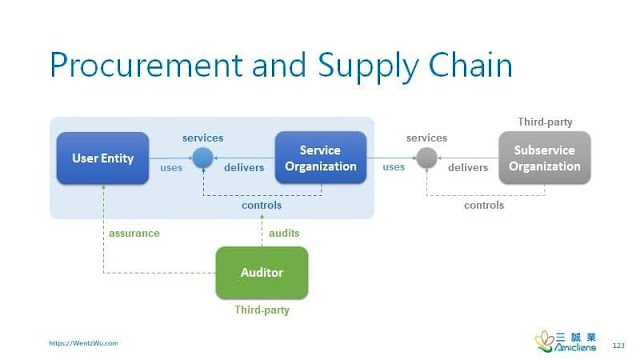
採購程序：
- 招標文件
- RFP
- 說明會
-
投標
- 建議書
- 資格確認Background
- FOCI（Foreign Ownership Control Influence）
-
能力Capability：軟體開發能力、採購（外包）能力、服務能力
- 丙方Auditor
- 軟體開發：CMMI
- 資安：ISMS
-
資安：SOC（AICPA）
- SOC1：財務認證
- Type I：書審
- Type II：書審+實地查核一段時間
- SOC2：類似ISMS
- Type I：書審
- Type II：書審+實地查核一段時間
- SOC3：精簡SOC2
- Type I：書審
- Type II：書審+實地查核一段時間
- SOC1：財務認證
-
信用卡PCIDSS
- 產品：Common Criteria，CC
- 雲端CSA/ STAR
-
評選
- 議價
- 簽約
- 履約
- 合約
- Service Level Agreement
- Service Level Requirement
- Security Requirement
- Audit Right 稽核權
- Service Level Agreement
- 合約
- 結案
Service Organization Control (SOC)
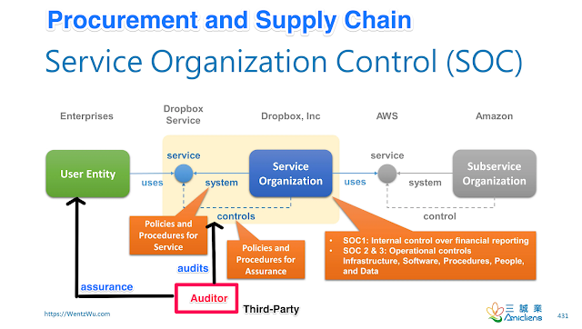
SOC 1、2 和 3 報告概述
服務組織控制 (SOC)
以下是微軟網站的摘錄：
企業越來越多地將數據存儲和應用程序訪問等基本功能外包給雲服務提供商 (CSP) 和其他服務組織。作為回應，美國註冊會計師協會 (AICPA)開發了服務組織控制 (SOC)框架，這是一種控制標準，用於保護在雲中存儲和處理的信息的機密性和隱私性。這與國際服務組織的報告標準《國際鑑證業務標準》(ISAE)一致。
基於 SOC 框架的服務審計分為兩類——SOC 1 和 SOC 2——適用於範圍內的 Microsoft 雲服務。
- 一個SOC 1審計，旨在會計師事務所審計的財務報表，計算一個的有效性CSP的內部控制影響使用供應商的雲服務客戶的財務報告。在上鑑證業務（SSAE 18）聲明和國際標準鑑證3402號公報（ISAE 3402）正在其中執行審計標準，並且是SOC 1報告的基礎。
- 一個SOC 2審計計一的有效性CSP的系統基礎上，AICPA信託服務原則和標準。根據鑑證標準 (AT) 第 101 節進行的鑑證業務是 SOC 2 和 SOC 3 報告的基礎。
在一個SOC 1或SOC 2審計結束後，審計師呈現的意見在SOC 1類型2或SOC 2類型2報告，其中描述了電信運營商的系統，並評估其控制的CSP說明的公平性。它還評估 CSP 的控制是否設計適當、是否在指定日期運行以及在指定時間段內是否有效運行。
- 審核員還可以創建 SOC 3 報告（SOC 2 類型 2 審核報告的縮寫版本），供希望獲得 CSP 控制保證但不需要完整 SOC 2 報告的用戶使用。只有當 CSP 對 SOC 2 有無保留的審計意見時，才能授予 SOC 3 報告。
組織韌性規劃 Organizational Resilience Planning
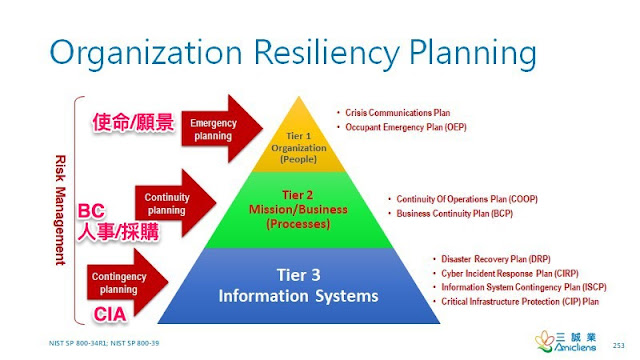
Organizational Resilience Planning組織韌性規劃
Tier1：
* Crisis Communication Plan 危機溝通計劃
* Occupant Emergency Plan（OEP）乘員緊急計劃
Tier2：
* Continuity of Operations Plan（COOP）業務連續性計劃
* Business Continuity Plan（BCP）業務連續性計劃
Tier3：
* Disaster Recovery Plan（DRP）災難恢復計劃
* Cyber Incident Response Plan（CIRP）網絡事件響應計劃
* Information System Contingency Plan（ISCP）資訊系統應急計劃
* Critical Infrastructure Protection （CIP）Plan 關鍵基礎設施保護計劃
災難Disaster：建築物或相關設施（Data Center）出問題，且必須搬家到其他設施辦公。
* 災難重建的目標是維持CIA
Business Continuity 業務持續（ISO 22301）：組織持續交付產品及服務的能力
* Business Continuity 業務持續目的：培養及維持組織持續交付產品及服務的能力
- 事情（Event）（中性）
- 事故（incident）（不好）：等級高中低
- 中斷（Distraption）：事故將產品及服務交付中斷
- 災難（Disaster）：建築物或相關設施（Data Center）出問題，且必須搬家到其他設施辦公（設施等級的事故，造成必須搬家。）
- 設施（Facitoty）：資訊系統（IS）
- Relocation搬家
- Disaster Recovey （DR）
- IS
- 設施（Facitoty）：資訊系統（IS）
事故回應：防止小事故變成大事故
重建：主要談資訊系統部分（CISSP）
BCM
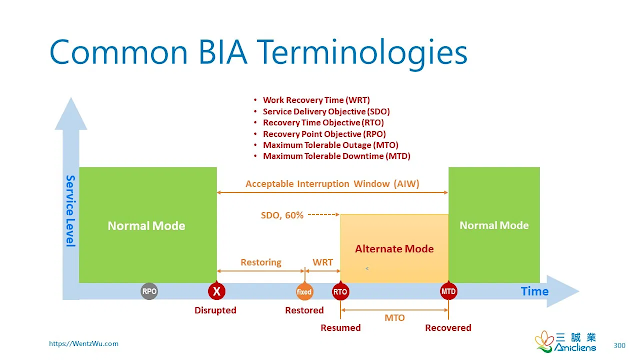
Business Continuity 業務持續：組織持續交付產品及服務的能力
BCM
1. 內外部環境分析
2. 找出利害關係人及需求
3. 訂定範圍（清單）（BCM）
* 依據內外部環境分析及利害關係人（組織單位及產品、服務）
4. 業務衝擊分析BIA => 找出關鍵流程及關鍵資源
* MTD（Maximum tolerable downtime）最大容許停機時間：高階主管核定
* RTO （Recovery Time Objective，復原時間目標）：
* RPO（Recovery Point Objective，復原點目標）：
* BIA（Business Impact Analysis）：依MTD決定
5. 風險評鑑
* 風險識別 Risk Identification（找風險）
* 目標（列表）
* 風險登錄表（Risk Register）
* 風險分析 Risk Analysis
* 不確定因素/機率
* 影響
* 風險曝險值Risk exposure
* 量化分析
* 質化分析
* 風險評估 Risk Evaluation
* 決定/判斷decisions是否進行風險處置
* 順位Priorities
6. 風險處置（ATMA ）=> PLAN
1. 事前
* Recovery Site(RTO)
* Mirrored Site ，資料對拷
* RTO：0-30s
* RPO：zero
* Hot Site熱站點，與生產環境，只差最新一份資料
* RTO：30s-30m
* RPO：zero
* Warm Site溫站點，解決採購設備問題
* RTO：30m-72h
* RPO：>zero
* Cold Site冷站點，解決租賃地點問題
* RTO：>72h
* RPO：>zero
* 備份(RPO)
* Full Backup
* Differential Backup
* Incremental Backup
2. 事中
3. 事後
7. 測試及演練PLAN
1. Read-through or Tabletop：Table Test(Check List)桌面測試，文件審查
2. Walkthrough ：Walking Test 穿行測試，角色扮演（ex.軍棋演練/討論敵軍可能的入侵情境）
3. Simulation：Simulation 模擬測試，直接演一演（ex.火災逃生演練）
4. Parallel：Parallel 平行測試，在不影響正式環境下，另外找一個環境進行中斷測試（ex.從AWS建置全新的環境及系統，進行中斷演練）
5. Full interruption：全中斷測試
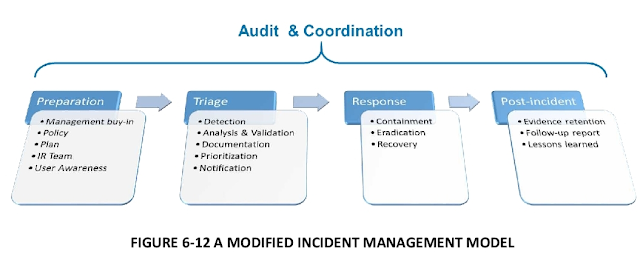
事故回應
事故回應（IR）計畫
只要會影響產品及服務之風險或事故，皆需進行處置及回應（CISSP只從資安角度（尤其是網路））
incident Management
* Preparation準備階段：須先有計劃Plan
* Management buy-in：管理階層的同意（形成政策Policy）
* Policy
* 1️⃣Plan：計畫
* IR Team
* User Awareness：使用者意識
-
Triage（預處理）檢傷分類：先判斷真偽及排定順序，完成通報
- Detection：偵測
- IDS
- 1️⃣Analysis & Validation：判斷真假
- 2️⃣Prioritization：排列優先順序（事故等級高中低）
- 3️⃣Notification：完成通報
- Documentation：紀錄
- Detection：偵測
-
Response回應階段：先停損，後根除（因），有損害再復原
- 1️⃣Containment：抑制（包含），讓使用者（業務）可以繼續工作（Workaround）
- Workaround，暫時性處理方式
- 2️⃣Eradication（Remedy）：（根除）找到根因（Root Cause），防止再發（解決方案Solution）
- 解決方案Solution：解決根因（Root Cause）
- 3️⃣Recovery：當有損害，應進行復原
- Collect Evidence：收集證據
- 調查investigate
- 行政調查
- 法院調查
- 1️⃣Containment：抑制（包含），讓使用者（業務）可以繼續工作（Workaround）
-
Post-incident事後：做好反省檢討
- 1️⃣Lessons learned （LL）：檢討改善
- Evidence retention
- Follow-up report
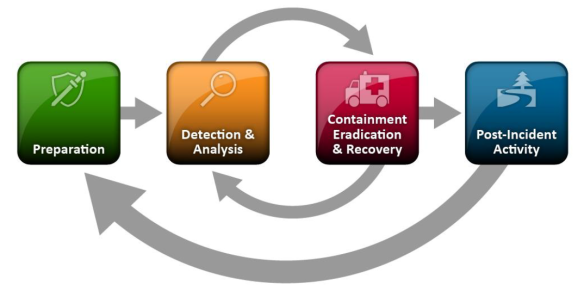
E-Discovery
- Information Governance 資料處理流
- identification 識別，識別證據資訊
- Preservation 保存，保存證據資訊
- Collection 收集，收集證據資訊
- Processing 處理，過濾證據資訊
- Review 檢查，檢查證據資訊
- Analysis 分析，分析證據資訊
- Production 產出，依照提供證據格式
- Presentation 呈現，向法院呈現證據
取證磁盤控制器執行四個功能。其中之一，寫阻塞，攔截發送到設備的寫命令並防止它們修改設備上的數據。其他三個功能包括返回讀取操作請求的數據、從設備返回訪問重要信息以及從設備向取證主機報告錯誤。控制器不應阻止將讀取命令發送到設備，因為這些命令可能會返回關鍵信息。
Intrusion Detection
Intrusion Detection
* 網路
* IDS：只偵測、只聽、只判斷，不干涉入侵行為
* IPS：偵測、判斷，干涉入侵行為
* Related Topics
* AI
* SOAR
* 聯防：自動化發通報驅動其他設備
* SIEM
* UEBA（User and Entity Behavior Analytics）
* 情資Threat intelligence（Threat feeds, Threat Hunting（人工））
* Detection Approaches Detection
* Signature-Based Detection
* 比對已知樣態
* Anomaly-Based Detection
* 以異常為基礎
* 能偵測未知威脅
* 建立時訓練期（Training Period），形成Model（Profile）
* 以統計技術
* 大數據
* 資料採礦
* AI
* 機器學習
* 缺點：推論，有誤判（假警報）
* Alert
* positive 陽性
* True positive：發警報
* false positive ：以人工判斷後為假警報
* negative 陰性
* True negative：未發警報
* false negative：有真實入侵，但未發Alert
* IDPS Deployment
* Host-Based IDS
* Agent
* Network-Based IDS
* Sensor
* Sensor Modes
* InLine
* Passive
* Passive Sensor Locations
* Spanning Port
* Network Tap
* IDS Load Balancer
* Network Bechavior Analysis（NBA）
* Wireless
- 實體 (請參考生物辨識)
符合性
Compliance 符合性
Organization Level 組織層面
- Laws & Regulations 法律&法規
- Industry Standards 行業標準（PCIDSS / ISMS）
- Contracts 合約
Individual Level 個人級別
- Organizational Policies 組織政策
- Due Diligence / Due Care 盡職調查/應有關注
- Ethics 道德
個資要求
* 告知收集的目的
* 收集的資料，需最小化
* 須經當事人同意，始得收集
* 為確保資料品質，當事人可進行更新
* 當事人若提出刪除要求，不得拒絕
* 資料控制者，對收集來的個資，需做好保護(含對資料處理者的要求及確保資料處理者做好保護)
* 法律責任無法卸責
* 若不慎洩漏，必須做到通報當事人的義務。
* 個資在分享階段，需注意到是否有跨境傳輸？以及有沒有相關保護措施，如以下
* 匿名化：去除可識別唯一性
* 擬名化：仍可使用對照表，還原可識別唯一性
Code of Ethics
保護社會、共同利益、必要的公眾信任和信心以及基礎設施。
以光榮、誠實、公正、負責任和合法的方式行事。
為原則提供勤奮和稱職的服務。(為你的雇主提供專業)
推進和保護職業。(促進並保護資安專業)
投訴者，須為受害者
需指出受害者身份
指出CISSP違反原則（第三條，雇主/第四條，同為CISSP）
資訊技術安全評估共同準則 (Common Criteria for IT Security Evaluation, ISO/IEC 15408)，簡稱共同準則 (Common Criteria) 或 CC，是針對實現資/通訊產品所使用資訊技術的安全性所進行的安全技術認證。
- Target of Evaluation，TOE，廠商研發送驗的IT產品
- Security Target，ST，檢驗標準（標準廠商自己訂，第三方驗證）
- Protection Profile，PP，範本，供ST參考
- Common Criteria Testing Lab，CCTL，CC檢驗實驗室
- 類似SOC，標準自己寫，美國會計師來驗
- EA估保障等級 (Evaluation Assurance Level, EAL)：以數值方式來針對評估的深度以及嚴謹性進行評比。每一個 EAL 會對應一組預先定義好的安全保障需求 (SAR)，這些安全保障需求涵蓋產品開發的全部過程，有一定的嚴謹性。
Evaluation Assurance Level
EAL7，Formally Verified Design And Tested，學術水準
EAL6，Semi-formally Verified Design And Tested
EAL5，Semi-formally Designed And Tested
EAL4，Methodically Designed, Tested And Reviewed，經過設計
EAL3，Methodically Tested And Checked
EAL2，Structurally Tested，結構測試
EAL1，Functionally Independently Tested，依操作手冊所寫進行功能呈現
Evaluation Assurance Level
EAL7，Formally 正式(學術)（數學）
EAL6，Semi-formally半正式
EAL5，半Semi-formally ，半正式
EAL4，Methodically ，有設計
EAL3，Methodically，有條理
EAL2，Structurally ，有結構
EAL1，Functionally，有功能
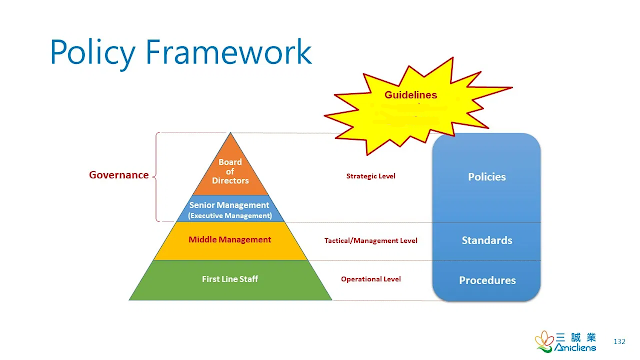
Asset Security
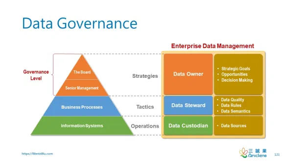
盤點
- 盤點後指定找到Asset Owners進行分類
分類
分類原則：主要根據Business Value
* Business Value
* Confidentiality
* Integrity
* Availability
* Compliance
* Purchase Cost
* Opportunity Cost
* Revenue loss
Military （依據Confidentiality機密性，Executive Order 12356）
* Top Secret：只要這機密資料外洩，會造成人命損失
* Secret
* Confidential
* Unclassified
保護
懶人包Security Frameworks（框架）
常見分類方式：
Security Safeguards（HIPAA）
* Administrative（Management）行政管理
* Technical（Logical）技術（邏輯）
* Physical 實體
Types of Access Control (ISC)2
Before
* Directive 指示
* Deterrent 威懾
* Preventive 預防
During
* Detective 偵測
* Corrective 糾正
After
* Recovery 復原
Others
* Compensating 補償
NIST RMF包含那幾個步驟?
1. Categorize Systems
2. Select Controls
3. Implement Controls
4. Assess Controls
5. Authorize Systems
6. Monitor Controls
何謂範圍(scope)
等同清單（list），可以條列
清單有寫的就是範圍內，沒寫就是範圍外
scope等同清單(list). 所以清單就是可以用1,2,3,4,5...條列式列舉的文件.
scoping就是列清單.安全控制的scoping, 就是決定要下多保安全控制措施, 把清單(scope)開出來
scope通常可以去參考一些框架(懶人包), 它們會建議一包安全控制給企業用, 企業可再根據自己的需求去修改(增加, 刪除或調整), 這個就叫客製(tailoring)
* Scope 範圍：受影響的範圍
* Scoping 決定範圍，決定基準或框架
* Tailoring (量身訂做) 由框架衍伸增加組織特性（所需）
NIST Risk Management Framework (RMF)
1. Categorize Systems：依據impact程度分高中低
2. Select Controls：依等級進行項次的控制
3. Implement Controls：進行控制
4. Assess Controls：評鑑有效性
5. Authorize Systems：授權系統上線
6. Monitor Controls：持續監控安全控制措施一直有效
I+3A
Authentication（驗證身份）重點:
1. 三個小步驟 (要帶到token/assertions及SAML/OIDC)
2. MFA
3. 身份驗證協定: 從歷史開始講
4. SSO: Integrated, Fedrated, Scripted
Authorization（檢查授權）重點:
1. Owner決定授權, Custodian(administrator)設權限
2. Need-to-know及Least Privilege
3. Access Control/Authorization mechanisms機制: DAC/MAC/RBAC/ABAC/Rule-based/Risk-based => 以及相關的學術理論
Accounting（紀錄行為(寫Log)）重點:
1. 寫log (accounting)
2. 看log (auditing => audit trail)
3. 追究責任
Assets
* Inventory盤點
* 盤點後指定找到Asset Owners進行分類
* Classification分類
* 依Business Value業務價值，價值高中低，進行保護
* Protecton保護
* RMF
* AC
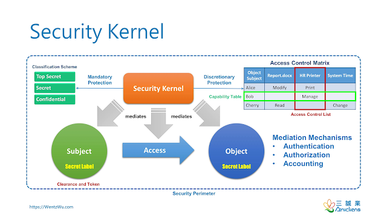
TCSEC 安全系統評估準則
Trusted Computer System Evaluation Criteria
（Orange Book）
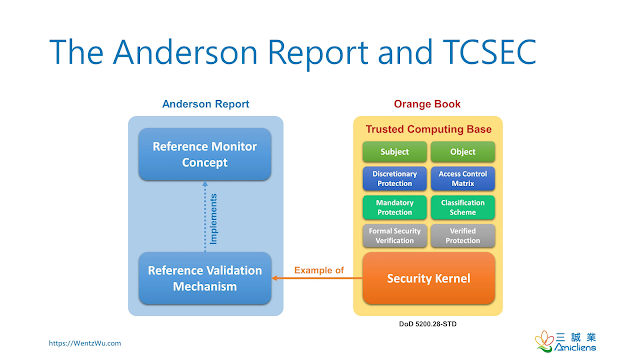
Access Control（Security Kernel）
* DAC
* MAC
Anderson Report
不會被輕易破解, 要完全管制存取行為, 要夠小(不影響到效能)
- tamper proof 防篡改，自身要夠安全
- always be invoked 總是被調用，存取都要管制
- small enough 足夠小（性能），體機夠小
TCSEC Evaluation Criteria
-
Division D
-
Division C
- DAC
- Audit
- Object Reuse
- Division B
- MAC
- Labels
- Trusted Path
- Configuration Management
- Covert Channel Analysis
- Trusted Recovery
- Division A
- Formal Design嚴謹設計
- 以學術水準等級（數學理論）的嚴謹程度，來設計
- 根據數學理論發展出來的設計
信任運算基礎Trusted Computing Base，TCB，這台電腦所有安全功能的總成（Security Perimeter安全邊界）
1. Access control （Security Kernel）
1. TR（Trusted Recovery）
1. TPM（加解密晶片）
PC（TCS）＝TCB+非安全元件（如輸入元件）
- Trusted Computer System , TCB
- 電腦系統的採購規範
- TCB 是 : 一套電腦系統內安全元件的總成(最低要求)
- 安全元件還有 EX. Security Keneral , TPM，TR (可信任式復原) …等
- Security Perimeter
- TCB和其他負責非安全事務的元件合組成一台電腦，安全元件與非安全元件之間的判定標準，這虛擬的邊界稱為安全邊界 Security Perimeter
Access
* Use使用
Subject主體
- Active
- 提出要求的主動方
Object客體
- Passive
- 回應要求的被動方
Security Kernel安全核心：負責存取控制
在電腦系統中，負責管制主體及客體之間的存取行為
Security Kernel安全核心：在電腦系統中，負責管制主體及客體之間的存取行為
Security Kernel安全核心之安全要求：不會被輕易破解, 要完全管制存取行為, 要夠小(不影響到效能)
Security Kernel安全核心之運作，會在主體對客體進行存取行為時，驗證主體身份（Authentication ），確認使用行為是否已被授權（Authorization ），並對於在客體的任何行為進行紀錄(Accounting )
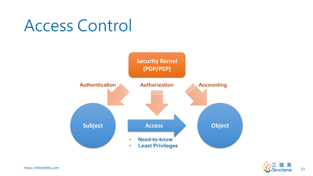
Access control
Read：Simple property簡單屬性：管制讀取的動作
Wirte（Read以外的行為）：Start property星屬性：管制讀取以外的動作
Referver Monitor參考監視器
監控程式對於位置（記憶體）的參考（使用）
* Security Kernel：實作Referver Monitor
當主體是人時候（美國軍方）
* 會被核定一個安全等級 security clearance
* 如Confidential
* 每個設備（Object）也會被Label一個security clearance（如Confidential、Secret、Top Secret）
Read：
A ---> （Control Flow）B
A ←（Data Flow）B
Write：
A ---> （Control Flow）B
A →（Data Flow）B
禁南下（高等級到低等級）政策：資料流動禁止高階往低階流。不能讀取高階資料，不能寫入低階資料，跟工作無關的不能讀。
洩密：
* 先判斷security clearance：層級（等級）不夠，但仍能讀取比自己高層級（等級）資料
* 再確認need-to-Know：同一層級，讀取非工作需求之資料（未授權）（need-to-Know）
防洩密：做到資料(Data Flow)禁南下
OASIS組織制定
* SAML
* XACML
* SPML
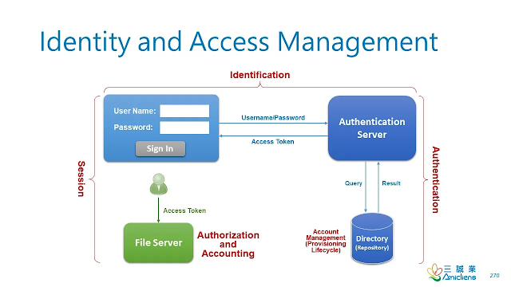
Identity and Access Management
- Identity Management（IdM） 身份管理
- User Life Cycle
- Provisioning供裝
- User Life Cycle
- Registration
-
帳號Directory
SAM
/etc/shadow -
DAP
- X.500（表示法）
- DN
- O=ABC
- OU=Sale
- CN=Kack
- O=ABC
- DN
-
LDAP（Lightweight Directory Access Protocol，X.500瘦身版）
-
Repository
放資料的地方- 版本庫
- 函式庫
- 帳號資料庫
-
Identity Proofing身份證明
-
ID Cards
- OTP
- Magnetic Stripe Card（Dumb）：磁條卡，無IC、記憶
- IC Card（Smart）
- 刷卡供電，接觸式卡片
- 電磁供電，被動式，非接觸式卡片
- 自帶電磁，主動式，非接觸式卡片
-
Provisioning/De-Provisioning
Provisioning供裝
一套系統在不同系統上自動化完成建帳號、設權限
協定：SPML（Service Provisioning Markup Language） -
Identification鑑別
- The Process of a subject Claiming, or professing, an identity主體聲稱或承認身份的過程
- 出示身份
Authentication身份驗證
- Authentication身份驗證：確認身份正確性
- 出示身份：密碼加密（主動方告訴認證伺服器（Authentication Server，AS），進行身份管理）
- 檢查身份：直接存取帳號資料庫或是代驗證
- 通知結果：Token
- 通知結果
- Token
- Key Value
- Assertion斷言：An assertion is the “sentence or proposition in logic which is asserted (or assumed) to be true.
- 在邏輯描述中，被斷言是真實的
- 身份驗證
- 屬性
- 授權
- Claim宣稱
- Key（欄位） = Value
- ID = Jack
- Role角色
- EXP逾期時間
- 斷言(assertion)或宣稱(claim)是authentication server對通過身份驗證的subject的肯定描述, 通常是用key/value的形式程現. 例如:
FullName = Wentz Wu,
Email = wentzwu@example.com
- Token
- 斷言必須包含欄位(key)及值(value), 缺一不可.
- 一個token, 可以放很多斷言.
-
Token標準協議
-
SAML：Security Assertion Markup Language
```- XML
- 自定義標籤
Jack
```
- XML
-
OIDC：OpenID Connect
-
* JSON
* {UserName："Jack"}
{UserName："Jack"
Age：40}
MFA多因子驗證
- Factors（MFA多因子驗證）
- 你知道什麼 Someting You know：意識（秘密）
- 你有什麼 Someting You Have：物品
- 你是什麼 Someting You Are：身體特徵
- Biometrics：
- 取特徵值（Model or template）
- 存資料庫（Model Database or Repository）
- Physiological
- Face
- Hand
- Fingerprints指紋
- Finger-vein靜脈
- Palm掌紋
- Eyes
- Iris虹膜
- Retina視網膜
- 容易遭疾病（糖尿病）影響
- Behavioral
- Voice
- Signature簽名動態
- Keystroke dynamic鍵盤動態
- Biological
- DNA
- Blood Glucose
- Physiological
生物辨識
Identificatoin辨識
one-to-Many
Authentication身份驗證
one-to-one
DNA，精準度99.9%以上
指紋，不夠精準（僅能當MFA之一）
FRR，False Rejection Rate，Type I，錯誤拒絕率，FRR愈高，愈容易被誤判拒絕，變成使用者的不便利，要多試幾次。
FAR，False Acceptance Rate，Type II，錯誤接受率，FAR愈高，有安全隱憂
EER，Equal Error Rate：FAR = FRR
CER，Crossover Error Rate，集合FRR及FAR兩個曲線的交叉點
FRR：錯殺. FRR高會造成不方便, 但較安全.
FAR:：錯放. FAR高會導致不安全, 但較方便.
ERR:：採購比較不同機器用. 愈低愈好
threshold門檻值調整，FRR和FAR改變，但不改變曲線
生物識別選購考量：
價格、效能、準確度（FRR+FAR越低越好）、容易使用、使用者接受度
視網膜接受度，最低
指紋接受度，最高
Authentication身份驗證相關協定
-
Protocols協定
- PPP
- Point to Point Protocol
- PAP：密碼驗證協議（明碼Clear Text）
- 改良版：SPAP
- CHAP：挑戰與回應協議（MD5）
- MD5
- Repeatedly：過程反覆驗證
- 改良版：MS-CHAP
- EAP擴展認證協議(Framework)：屬框架，非身份驗證協定
- EAP-TLS
- 基於憑證驗證
- Server及Client都需要安裝憑證
- 憑證會到期，管理負擔重
- EAP-TTLS
- 精簡版EAP-TLS
- 僅Server安裝憑證
- PEAP
- 微軟版
- 改良EAP-TLS
- 僅Server安裝憑證
- EAP-MS-CHAP
- EAP-TLS
-
VPN
- A到B，有一虛擬（Virtual ）連線，常稱Tunnel
- 可執行未加密連線（僅確保真實性）
- PPP可用的Protocol都可以用
- Tunnel
- T2F（Cisco）
- PPTP（微軟）
- MPPE
- L2TP（RFC）
- PPP
- L2 Tunnel Protocol
- IPsec
- AH（真實性）
- ESP（真實性+機密性）
- Security（Transition Session）
- 完整性（真實性）
- 機密性
-
NAC（Network Access Control）-LAN
- 連線加密協定
- 使用PPP協定
- 802.1X（身份驗證協議）：Client to Switch/AP的身份驗證
- 又稱EAPOL（EAP OVER LAN）
- Ethernet身份驗證 （Switch，RADIUS Client）
- Wireless身份驗證（AP，RADIUS Client）
- 又稱EAPOL（EAP OVER LAN）
- RADIUS：AP與AD認證的協定
- AD預設停用
- AP與AD認證的協定
- 連線加密協定
-
Intranet
- NTLM（NT4）
- Kerberos（Win7）
- Cilent
- KDC（Key Distribution Center）=
- 密鑰分發中心
- AS（Authentication Server）
- 認證伺服器
- 驗證身份
- TGS（Ticket Granting Server）
- 票據授權伺服器
- Server
- 認票TGT
- TGT（Ticket Granting Ticket）= 票據授權票據，票據的票據
- 運作方式
1.Client透過UserID與AS進行認證後取得TGT
2.Client提供TGT給TGS驗票，取得Application Server Ticket
3.Client提供Ticket給Application Server確認後，提供服務
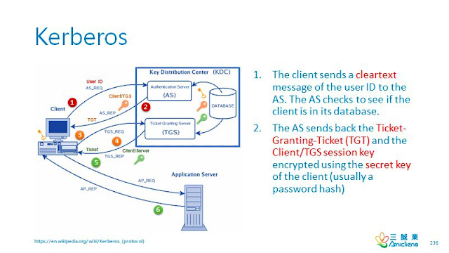
- Extranet
- 供應商整合（聯盟）
- SAML
- Internet
- OIDC
- PPP
SSO
SSO（Single Sign On）單一簽入
* 使用者登入一次（不是指一個帳號），即可跨系統存取資源（保留自己的帳號）
* 一次登入可以對應多個系統帳號（每個系統都有自己的帳號）
* 軟體特色
* 信任關係（聯盟（不同公司）），認該Token（盟主），盟主帳號對應各自系統帳號
* 缺點，如FB API修改（或系統異常），信任關係即失效
* 形式
* 整合型（微軟，一個使用者只有一個帳號）
* 聯盟式（聯合式身份(federated Identity)）（使用者在每個系統都有自己的帳號，透過聯盟的關係，使用盟主的帳號即可跨系統登入）
* 老系統，可寫程式幫忙登入（讓使用者感覺只登入一次）
* 腳本
* logon script
無法SSO的話，可簡化登入程序
如，記憶密碼
Authorization授權
-
Authorization授權：確認是否有權限
- Principles原則（Assets Owner決定授權, Custodian(administrator)設權限）
- 工作有需求（need-to-know）
- 最小權限（Least Privilege）
- 協定
- XACML（SAML）
- OAuth2（OIDC）
- Principles原則（Assets Owner決定授權, Custodian(administrator)設權限）
-
Data Owner，執行分類及授權
- Classification分類
- Authorization授權
- 工作有需求（need-to-know）
- 最小權限（Least Privilege）
- Accountability問責
- Data Steward
- 管理資料品質狀況及組織的適用性
- Data Custodian
- Security Administrator
- 執行權限分類
授權機制Authorization Mechanisms
- Authorization Mechanisms授權機制
- Discretionary Access Control ，DAC，隨意型存取控制（隨Owner決定（File Owner/Data Owner）），用帳號設權限，可稱Identity-based身份型。
- 權限的給予由 Owner 決定,由Custadeo 實施
- 存取控制矩陣（Access Control Matrix，ACM）
- 資源的存取表（Object，被動方，左右欄位）
- 從資源的角度 (從資源設定權限)(存取控制清單) ACL,Access Control List
- 人的權限存取表（Subject，主動方，上下欄位)
- 從人的角度 (能力表) Capability Table
- Take-Grant Model，能力表操作（ACM新增移除）理論
- 缺點，
- 僅一般性原則，無法防止舞弊。
- 權限授權後，仍可再往下授權，無限擴展。
- Non Discretionary Access Control model（non-DAC）
- Role-based Access Control ，以角色（具有權限的群組Group）為基礎。角色有帶權限，群組無權限概念。綁定職務。
- Attribute-base Access Control ，ABAC，屬性為基礎的存取控制，現代權限控管的主流，綜合Subject主體的屬性（ID、性別）、Object客體的屬性（IP、系統）和環境的屬性（時間），訂定複雜的授權規則。比較符合實際業務需求（特殊促銷案）。協定：XACML。
- Risk-based Access Control ，風險為基礎的存取控制，ABAC的延伸，依風險（屬性）分數。（本人1分、上班時間2分、公司電腦2分，存取系統需10分以下）。
- Rule-based Access Control ，以規則為基礎的存取控制，if-else，等同防火牆、統一控管、集中控管。
- Mandatory Access Control ，MAC，強制型存取控制。系統根據標籤進行強制控制。人員（Subject）經過安全檢查，資料（Object）進行分類，進行標籤。又稱Lattice-based Access Control。
- Discretionary Access Control ，DAC，隨意型存取控制（隨Owner決定（File Owner/Data Owner）），用帳號設權限，可稱Identity-based身份型。
Privileges 特權 = Permissions 權限 + Rights 權利
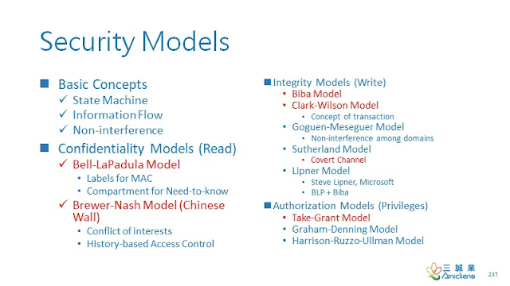
Security Models（BBCC）
* BLP，MAC，只控管機密性，禁南下
* Biba，MAC，只控管完整性，禁北上
* Chinese Wall，MAC，只控管機密性，防止利益衝突，以歷史為基礎；建立利害衝突群組，以時間或歷史為基準。。
* Clark-Wilson，交易相關，與AC無直接關係。
Security Models
- Bell-LaPadula Model（BLP）：確保機密性，禁南下
- Biba Models： 確保完整性，禁北上政策
- Brewer-Nash Model（Chinses Wall），確保機密性，設定利益衝突群組，根據歷史讀取紀錄，動態阻絕
- Clark-Wilson Model：交易相關，與AC無直接關係，職責分離
- Goguen-Meseguer Model：Non-interference among domains
- Sutherland Model：Covert Channel
- Lipner Model：BLP+Biba
- Take-Grant Model：能力表操作（ACM新增移除）理論
- Graham-Denning Model：安全的建立與刪除Subject & Object，讀取、授予、刪除、轉移權限
- Harrison-Ruzzo-Ullman Model：Subject 只能對 Object 進行有限的操作，確保不會造成未知的漏洞
Security Models（BBCC）
* Basic Concepts基本概念
* State Machine，狀態機，每個狀態都是安全的狀態
* 無限狀態
* 有限狀態
* information Flow，資料流
* Control Flow
* Data Flow
* Non-interference，不會互相干擾
* Confidentiality Models（Read）
* Bell-LaPadula Model（BLP）
* Labels for MAC
* Compartment for Need-to-Know，DAC
* 把所有主體及客體做分類
* 確保機密性
* 防止洩密：禁南下（高等級到低等級）政策：資料流動禁止高階往低階流。不能讀取高階資料，不能寫入低階資料。（No read up, No Write down）
* Bob 之Simple及Star都勾選的話，僅可在所屬等級進行存取
* 管制資料流動
* Simple 簡單屬性 (管制讀取)
* Star 星號屬性 (管制寫入)
* Brewer-Nash Model（Chinses Wall）
* Conflict of interests
* History-based Access Control（Time-based）
* 目的 : 確保系統機密性
* 設定利益衝突群組，根據歷史讀取紀錄，動態阻絕
* Integrity Models（Write）
* Biba Models
* 目的 : 確保完整性
* 禁北上政策 (No write up,no read down)
* Clark-Wilson Model
* 交易相關，與AC無直接關係
* 確保完整性
* Concpt of transaction，交易
* 多個異動資料庫動作，視為一個單元
* 全部成功
* 全部失敗Roll Back
* 職責分離SoD，寫入與職責是分開的
* Clark-Wilson transaction
* 用戶活動個體。
* 轉換過程(Transformation Procedure，TP) 可編程的抽像操作，如讀、寫和更改。
* 約束數據項(Constrained Data Item，CDI) 只能由TP操縱。
* 非約束數據項(Unconstrained Data Item，UDI) 用戶可以通過簡單的讀寫操作進行操縱。
* 完整性驗證過程(Integrity Verification Procedure，IVP) 檢查CDI與外部現實的一致性。
* Goguen-Meseguer Model
* Non-interference among domains
* Sutherland Model
* Covert Channel
* Lipner Model
* Steve Lipner, Microsoft
* BLP+Biba
* Authorization Models（Privileges）
* Take-Grant Model
* Graham-Denning Model
* Harrison-Ruzzo-Ullman Model
存取控制模型 (OSG)
| Model | 完整名稱 | 關鍵特徵 | 實現方式與解決 | 例子 |
|---|---|---|---|---|
| DAC | Discretionary Access Control | 每個 Object 都有一個所有者,所有者可以授予或拒絕其他任何 Subject 的訪問 | 使用客體ACL | Windows 系統的文件、資料夾權限 |
| RBAC | Role Based Access Control | 使用 Role 或 Group | 可消除特權潛變 Privilege Creep，強制執行 Least Privilige | Windows OS 帳戶權限，WordPress 站台 |
| ABAC | Attribute Based Access Control | 可包含多個屬性的規則,比RBAC更靈活 | 屬性可以是用戶、裝置的任何特徵 | SD-WAN 軟體定義網路 |
| MAC | Mandatory Access Control | 使用應用於 Subject 與 Object 的 Labels,又稱 Latice-based Model,且為 Implicit Deny | 依賴 Classfication Labeles (也需 Need To Know) | 軍方人員等級與可存取專案 |
| Rule-based AC | Rule-based Access Control | Restriction(限制) 、 Filter(過濾器) | 防火牆 |
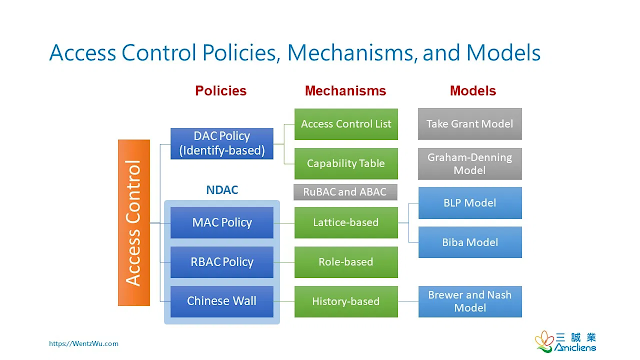
Accounting會計
Accounting會計：寫LOG（問責），紀錄主體或客體的行為（不管有無通過驗證或授權）
* 寫Log（Accounting）
* 看Log（Auditing）
* Auditing
* Audit Trall
* 看跟當事者相關的軌跡
* 問責Accountability
安全評鑑Security Assessment
何謂安全評鑑?
安全評鑑大部份的情境是指security control assessment. 而secucurity control則是risk treatment的實際施作, 也就是安全評鑑其實是資訊風險處置的成果的評鑑. 這個已經是在風險評鑑之後了.
風險評鑑 => 風險處置(寫計晝書及實施安全控制措施) => 安全(控制措施)評鑑.
Security Assessment安全評鑑：確保Security Controls有效性，是否符合符合性事項
* 查驗
* 訪談
* 測試Testiting
測試Testiting
- Common Testting 常見測試
- Penetration Testing
- Software Testing
- Social Engineering
- Type of Testing 測試類型
- Black vs White Testing
- 黑箱測試：測試者對於受測標的物一無所知
- 白箱測試：測試者對於受測標的物都知道
- 灰箱測試
- Active vs Passive Testing
- 互動：Interaction vs non-Interaction
- Manual vs Automated Testing
- Tester vs Test Runner/ Harness
- Static vs Dynamic Testing （Software）
- 靜態測試：未執行該軟體（屬Program），放置於硬碟進行測試
- 動態測試：已執行該軟體（屬Process），已被載入記憶體中進行測試
- Black vs White Testing
CWE，Common Weakness Enumeration：屬於設計階段風險審查。未針對特定廠商或型號。
CVE，Common Vulnerability and Exposure：屬已知弱點。針對特定廠商或型號。
CVSS，Common Vulnerability Scoring System：弱點評分系統
SCAP，Security Content Automation Protocol：自動化修補協議
NVD，National Vulnerability Database
弱點掃描：尋找已知漏洞威脅
滲透測試：利用漏洞進行入侵可行性測試
市面上常見產品如下：
1. 主機弱掃(作業程式之弱點掃描)：Tenable(Nessus)、Tenable.IO、Rapid7
2. 網頁型弱掃(又稱黑箱掃描、黑箱測試)：WhiteHat、Qualys、Webinspect、AppScan
3. 原始碼檢測(又稱白箱掃描、白箱測試)：Checkmarx、Fortify
4. 滲透測試：基本上會結合主機弱掃+網頁型弱掃，透過人工執行確認漏洞可行性。
滲透測試
滲透測試主要步驟：
1. Information Gathering，資訊收集
1. Scanning and Reconnaissance，掃描和偵察
1. Fingerprinting and Enumeration，指紋和列舉
1. Vulnerability Assessment，脆弱性評估
1. Exploit Research and Verification，利用研究和驗證
1. Reporting，報告
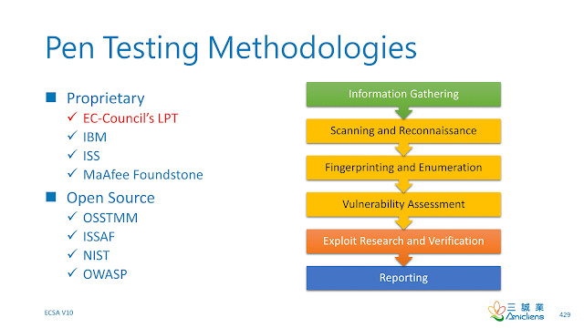
Audit
第一方：安全評鑑一般屬自我評鑑
第二、三方：如由獨立單位（如稽核部門、客戶、外部認證單位等）進行則稱為稽核
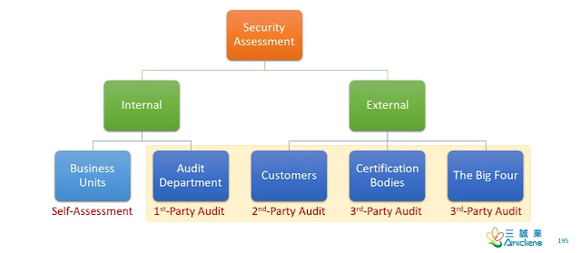
工程
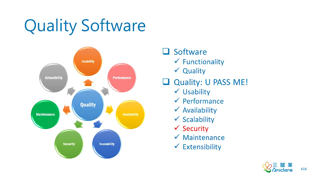
Security Engineering
* 工程（專案）：是一套學問，運用知識把一套產品製作出來，維運他，從出生到死亡
* 運用專業知識,把系統做出來,使用他維運它直到除役為止。(生命週期)
* 安全工程是解決整個系統生命週期中的保護需求或安全要求的一門專業學科。
Engineering
* Functionality
* Quality，U PASS ME
* Usability，使用介面，用戶體驗
* Performance，效能（7秒回應時間）
* Availability，系統穩定度（可用性，Anytime、Anywhere，QC：5個9，99.999%，一年約可停6分鐘）
* Scalability，可擴展性（架構）（Elasticity彈性）
* Security，安全性
* Maintenance，容易維護
* Extensibility，容易擴充
* System Engineering Standards
* ISO 15288，單純工程要求
* NIST SP 800-160，強化ISO 15288之安全要求
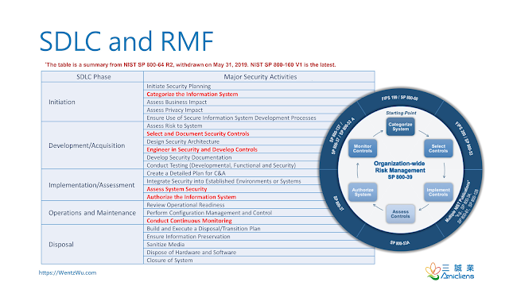
SDLC
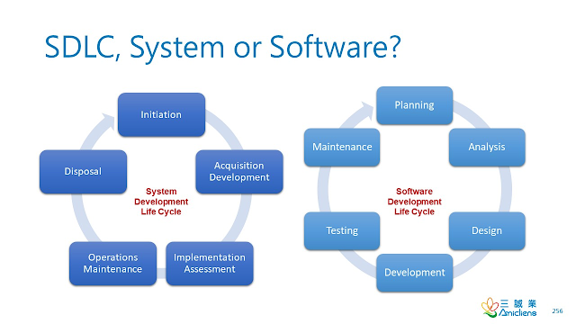
SDLC：System、Software、NIST SDLC（資訊系統開發）
* SDLC的S可以是software或system. NIST SDLC的S是指system. 而software只是system的一部份. 標的及範疇都不同.
Software
* 有品質的軟體 = 安全的軟體
軟體就是工程就是專案
* 在一定的時間和費用內，製作一定範圍的東西
軟體開發安全，從軟體生命週期，切
* 能夠動
* 有品質（具備安全性）
軟體開發的目的：開發有品質的軟體
* 具備安全性有品質（安全性）軟體：時時都安全（SDLC、狀態）、處處都安全（系統架構設計、元素）
Software Development Security 軟體開發安全
* The Context and Scope of Software Developmen，軟體開發的背景和範圍
* Software Developments as a Discopline of Engineering，軟體開發作為工程的差異
* Software as a Component of a System，軟體作為系統的組成部分
* Software "Development" Means "Make" or "Buy"，軟體"開發"表示"製造"或"購買"
* Enforcing Security Anytime & Anywhere，隨時隨地加強安全
* Anytime：Software Development Life Cycle（SDLC），隨時：軟體開發生命週期（SDLC）
* Anywhere：Sofeware Architecture and Environments，任何地方：軟體建築和環境
* Maturity Models，成熟度模型
* Capability Maturity Model Integration（CMM），能力成熟度模型整合（CMM）
* Software Assurance Maturity Model（SAMM），軟體保證成熟度模型（SAMM）
* 軟體成熟度
* 軟體開發能力
* 取得（採購）能力acquirement
* 服務交付能力Service deliver
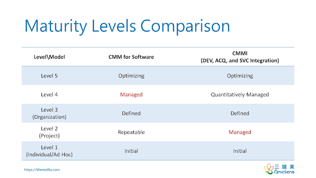
CMMI/SAMM成熟度等級：
1. 土法煉鋼
1. 各自為政，（有專案經理，但各自為政（各PM的經驗不一））
1. 統一方法，（公司立定統一一套辦法）（Managed 常見）
1. 量化管理
1. 最佳化（持續改善）
NIST System Development Life Cycle，SDLC
* initiation，啟動
* Development/Acquisition，開發Make/收購Buy
* Implementation/Assessment，實施/評估
* Operations and Maintenance，運營和維護
* Disposal，處置
軟體SDLC
Software Development Life Cycle，SDLC
Planning Phase
- 寫計畫書
-
決定開發方法
- 軟體開發方法Software Development Approaches
- Plan-driven （Formal）
- 產品成熟，經驗夠，可預知狀況
- 分階段做，但沒有產出
- 最後才會交付產品（才決定成敗）
- (計畫驅動型 Plan Driven)
- 計畫式
- 弄好細節按表操課
- 嚴謹
- 適合很熟悉的東西、掌握度高 (但現在環境太動態)
- 較難因應變化
- Ex. 一年才做完，一翻兩瞪眼
- 常見方法
- Cleanroom
- Waterfall（瀑布式）
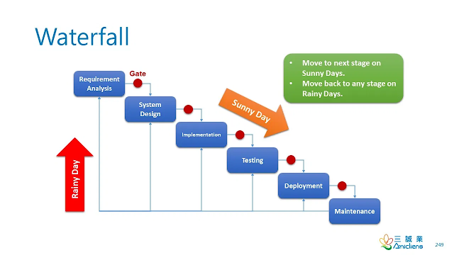
- Iterative反覆式（大瀑布拆成小瀑布，分期）
- 產出，分階段，進行SDLC
- 上線，最後才能使用
- 反覆/迭代 Iteration (生命週期)
- 強調風險管理
- 每一期作完客戶會看到一些產出(但還不能上線)
- 反覆可以做出東西 但還不能用
- 如 PPT 簡單畫面呈現
- 一年做四次
- 常見方法
- Rapid Application Development
- Spiral
- Component-based Development
- Prototyping
- Agile（Iterative週期反覆（SDLC） + Incremental價值見證(Value)）(是觀念、方法)
- 每個階段都有產出，且要能上線（強調結果）
- 適合充滿不確定性的專案（以敏捷的方式，早點識別風險）
- 早死早超生（fail early fail fast），整體專案不一定比較快
- 反覆 "生命週期"會做出東西但結果不能實際使用
- 好處降低風險
- 反覆+價值漸增就是敏捷 (Iteration + Increment)
- 每一次的反覆交出來的東西要能上線、要能用
- 一旦能用就有產生價值 --> Increment (漸增的東西)
- 強調產出、強調風險管理
- 一期在Scrum 稱為 Sprint
- 透過 review 看 increment
- 常見方式
- Scrum，不超過一個月（框架）：針對錯綜複雜（complex）問題，採用迭代的、增量的方法來優化可預測性和控制風險的一個解決方案框架。
- Sprint，每次不超過15分鐘
- Kanbam，看板
- Iterative
- Kanban，也就是「看板」，也是敏捷開發裡的其中一種方式，主要是利用一塊板子，在上面區分多的區域，作為流程分類，將一張便利貼（卡片）視為一個User Story，從0 ->1 的流程控制與狀態移轉
- eXtreme Programming，XP （極致編程）：解決軟體開發需求不斷改變的一種敏捷軟件開發框架，旨在為開發團隊生產更高質量的軟件和更高質量的生活。XP 是關於軟件開發的適當工程實踐的最具體的敏捷框架。一種輕量（敏捷）、高效、低風險、柔性、可預測、科學而且充滿樂趣的軟體開發方式
- Test-driven development
- Pair Programming
- Continuous Integration
- 克萊斯勒
- 善用比喻 Ex. AWS SnowBall S3 Glash
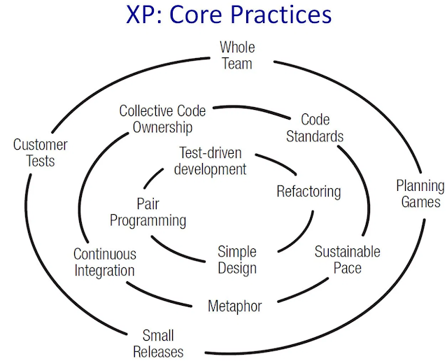
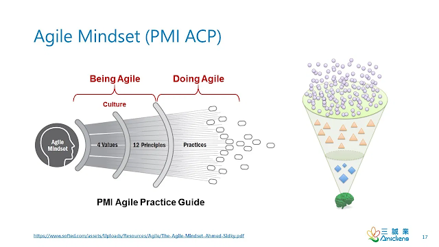
- 善用比喻 Ex. AWS SnowBall S3 Glash
- Scrum，不超過一個月（框架）：針對錯綜複雜（complex）問題，採用迭代的、增量的方法來優化可預測性和控制風險的一個解決方案框架。
- Plan-driven （Formal）
- 軟體開發方法Software Development Approaches
-
組建團隊（IPT，Integrated Product Team整合產品團隊）
- 整合產品團隊 （IPT） 是一個多門專業或功能的人員組成團隊，共同負責交付目標的產品
- 不同人不同階段進場（傳統）
- 開發人員
- 維運人員
- 敏捷團隊Agile：
- DevOps：DevOps（Development和Operations的組合詞）是一種重視「軟體開發人員（Dev）」和「IT運維技術人員（Ops）」和「品質保證人員QA」之間溝通合作的文化、運動或慣例。透過自動化「軟體交付」和「架構變更」的流程，來使得構建、測試、發布軟體能夠更加地快捷、頻繁和可靠。 讓開發、測試、維運人員 有效快速的溝通
- Dev
- IT
- QA
- CI、CD
- CI : 連續整合、整合測試
- CD
- 交付
- 部署
- 有系統授權上限的問題
- DevOps：DevOps（Development和Operations的組合詞）是一種重視「軟體開發人員（Dev）」和「IT運維技術人員（Ops）」和「品質保證人員QA」之間溝通合作的文化、運動或慣例。透過自動化「軟體交付」和「架構變更」的流程，來使得構建、測試、發布軟體能夠更加地快捷、頻繁和可靠。 讓開發、測試、維運人員 有效快速的溝通
- DevSecOps：在 DevOps 的敏捷、自動化、文化下融入資安，讓大家都有權力和責任來實踐資安。
- Dev
- IT
- QA
- Security
- 解決 授權 問題
敏捷軟件開發宣言
敏捷軟件開發宣言
Manifesto for Agile Software Development（以人為本，重視風險，創造價值）（思維Mindset）
1. Individuals and interactions over processes and tools
* 重視個人和互動，勝於流程和工具。
* 個人以及流程和工具之間的互動
2. Working software over comprehensive documentation
* 可用的軟體，勝過於很詳細的文件
* 工作軟件綜合文檔
3. Customer collaboration over contract negotiation
* 與客戶的協作，更勝於合約的協議
* 合同談判中的客戶協作
4. Responding to change over follwing a plan
* 回應變動（風險），更勝於照計畫書執行
* 響應遵循計劃的變更
12大敏捷原則
1. 我們的首要任務是通過早期和持續交付有價值的軟件來滿足客戶。
2. 歡迎不斷變化的要求，甚至是開發後期。敏捷流程利用變化來實現客戶的競爭優勢。
3. 經常提供工作軟件，從幾周到幾個月，優先考慮更短的時間尺度。
4. 業務人員和開發人員必須在整個項目中每天一起工作。
5. 圍繞有動力的個人建立項目。為他們提供所需的環境和支持，並相信他們能夠完成工作。
6. 向開發團隊內部和內部傳達信息的最有效和最有效的方法是面對面交談。
7. 工作軟件是進步的主要衡量標準。
8. 敏捷過程促進可持續發展。贊助商，開發者和用戶應該能夠無限期地保持穩定的步伐。
9. 持續關注技術卓越和良好的設計可提高靈活性。
10. 簡單性 – 最大化未完成工作量的藝術 – 至關重要。
11. 最好的架構，要求和設計來自自組織團隊。
12. 團隊定期反思如何變得更有效，然後相應地調整和調整其行為。
Analysis Phase
- 需求收集
- 需求分析
- 需求紀錄
- Verification：內驗正確性
- Validation：外確有效性
-
需求（Requirement）分析（了解利害關係人的需求）：（商業分析師）利用商業技巧，發掘（elicit）及收集（collect）利害關係人腦袋中的東西，分析他們的需要，用精準的方式寫下（變成規格書）並進行管理。
- 需要（Need）：利害關係人腦袋中的東西，
- 需求（Requirement）：寫下來並進行管理的需要。
- Spec規格：精確的描述（需求）
- SRS：軟體需求規則書
- 需求表達方式
- User Requirements Specification，URS：使用者要求規範
- Use Case（資安角度：錯誤行為Misuse Case or Abuse Case）
- 文本
- 圖
- User Story
- 身份：As a Role
- 行為：I want goal
- 目的：So that benefit
-
Requirement Engineering
- Requirement Development
- Elicitation
- Analysis
- Specification
- Validation
- Requirement Managemenr
-
Verification：內驗正確性
- Validation：外確有效性
- Define Problem定義問題
Design Phase
解決利害關係人的問題或需求
設計，是一個紙上談兵的解決方案（書面）
設計圖：資料流程圖
* Software Security Design Principles，軟體安全設計原則
* Core，核心
* Confidentiality，機密性
* Integrity，完整性
* Availability，可用性
* Authentication，認證
* Authorization，授權
* Accountability，問責
* Design，設計
* Least Privilege，最小權限
* Fail Safe，故障安全
* Open Design，開放設計
* Leveraging Existing Components，利用現有元件
* Separation of Duties，職責分離
* Economy of Mechanism，經濟機制
* Least Common Mechanism，最不常見的機制
* Eliminate Single Point of Failure，消除單一故障點
* Defense in Depth，深度防禦
* Complete Mediation，完全調解
* Psychological Acceptability，心裡可接受性
- 架構設計
- RDMS
- 細部設計
- 設計審查
- Verification：內驗正確性
- Validation：外確有效性
威脅塑模Threat Modeling
- 資安角度：威脅塑模Threat Modeling
- 風險管理的措施
- 風險識別：看圖找問題
- 步驟
- Diagram Application Architecture，把圖拿出來
- Identify Threats，看圖
- 識別風險
- OWASP
- Threat Categorization - STRIDE
- Spoofing
- Tampering
- Repudiation
- Information disclosure (privacy breach or data leak)
- Denial of service
- Elevation of privilege
- Identify , Prioritize & Implement Controls，處理問題
- 風險分析、風險評估、風險處理
- Mitigation Approaches
- Threat Analysis - DREAD
- Damage – how bad would an attack be?
- Reproducibility – how easy is it to reproduce the attack?
- Exploitability – how much work is it to launch the attack?
- Affected users – how many people will be impacted?
- Discoverability – how easy is it to discover the threat?
- Document & Validate，紀錄他
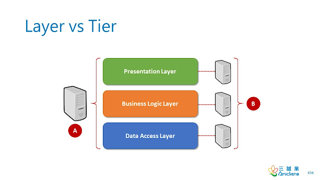
軟體架構 Layer 與 Tier (三層式架構)
- Layer (邏輯上) 三層式 (處處都安全的考量)
- Presantation Layer (畫面呈現、收資料)
- 資安考量
- 惡意的程式碼植入 (因為UI可用來輸入資料)錯誤的輸入SQL Injection (SQL)XSS (JavaScript)Buffer Overflow灌爆 (塞資料+惡意程式),
- 例外時 return 至特定位址 (提權執行…)進而執行惡意執行指令
- Bussiness Logic Layer
- Data Access Layer
- 資料存放
- 關聯式資料庫 (下方有補充)
- 非結構化資料庫
- 專家系統
- AI
- 資料存放
- 資安考量
- 實體完整性問題
- 資料重複就破壞完整性
- Primary Key就是用來保護資料完整性
- 參考完整性問題
- 查表動作 叫做 refernce
- 若無資料 (斷頭) 稱為 refernce 完整性出問題
- 用交易 Transaction 來保護參考完整性
- (透過交易去控制 Clark-Wilson)
- SOD
- 交易
- TP/IP/CDI
- 避免 : 主表格與明細表格不能出現斷頭
- 語意完整性問題
- 格式 、範圍 … 解讀上的意義 無意義
- 控制資料型態 控制資料範圍 限定輸入方式 (改下拉式)
- 實體完整性問題
- Tier (實體)
- 放在不同的電腦上
- 與程式部署架構有關
- 放在不同的電腦上
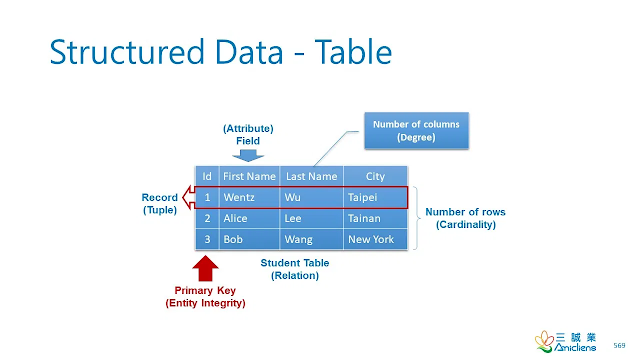
- 架構設計
- 三層式架構（Layer）
- Presentation Layer：畫面處理
- Business Logic Layer：運算邏輯
- Data Access Layer：資料儲存（重點是資料庫）
- Relation Database關連式資料庫：多個表（關聯Relation）的資料的集合，是以行（基數Cardinality）作為（紀錄Tuple）和列（度Degree）作為（屬性Attribute）的形式組織起來。
- RDBMS關聯式資料庫管理系統（英語：Relational Database Management System，縮寫為RDBMS)
- Entity Integrity實體完整性：Primary Key
- 實體完整性出問題（資料重複）：Primary Key的值一樣（跟資料欄位無關）
- Primary Key 唯一識別
- 參考完整性Referential Integrity
- 參考完整性出問題：Foreign Key找不到源頭
- 定義Foreign Key，建立Relaton，
- 交易控制：Clark-Wilson Model
- 語意完整性Semantic Integrity（Domain Integrity）
- 語意完整性出問題：輸入資料型態或是範圍（Domain）不對
- 透過欄位型態指定或是長度進行限制。
- Entity Integrity實體完整性：Primary Key
- 三層式架構（Layer）
- Transaction，交易
- ACID，Atomic, Consistent, Isolated, and Durable
- 原子性（atomicity，或稱不可分割性）、一致性（consistency）、隔離性（isolation，又稱獨立性）、持久性（durability）。
-
Database Programming Interfaces，資料庫程式設計介面
- Open Database Conne
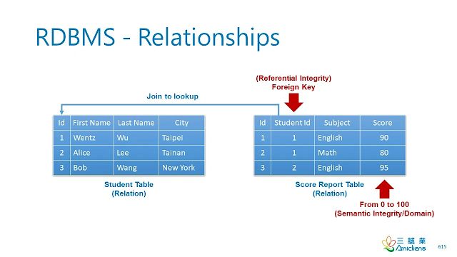
RDBMS
- RDBMS
- SQL Language
- Data Definition Language（DDL）
- Data Manipulation Language（DML）
- Data Control Language（DCL）
- Tables and Relationships，表格和關係
- Views，視圖
- Transactions，交易
- Aggregation and Inference，聚合和推論
- 高聚合：程式相關性越多得要包再一起
- 低偶合：不要利用到其他程式的功能（元件）要用的話，當有問題時不會影響自己
- Content-dependent Access Control，內容依賴存取控制
- Partitioning，分區
- Cell suppression，細胞抑制
- Noise and perturbation，噪音和騷動
- Polyinstantiation，多實例化
- SQL Language
資料庫正規化
- Relation Database Normalization關連式資料庫正規化
- 第一正規化原則
- All attributes are atomic，唯一識別
- Every non-key attribute must depend on the key。每個欄位的值都只能是單一值。
- 第二正規化原則
- Every non-key attribute must depend on the whole key。資料表裡的所有資料都要和該資料表的鍵（主鍵與候選鍵）有完全依賴關係
- Remove the non-transitive dependency。每個非鍵屬性必須獨立於任意一個候選鍵的任意一部分屬性
- 第三正規化原則
- Every non-key attribute must depend on nothing but the key。要求所有非主鍵屬性都只和候選鍵有相關性
- Remove the transitive dependency。非主鍵屬性之間應該是獨立無關的
- 第一正規化原則
專家系統 Expert Systems
- Expert Systems 專家系統
- User interface：由使用者進行搜尋後回饋建議
- Inference Engine：透過關聯或資料科學技術查找相關Knowledge Base資料
- Knowledge Base：由專家輸入相關知識
SOA
- SOA，Service-Oriented Architecture
- 軟體服務化
- Roles
- Service Registry，服務註冊
- Service Provider，服務提供
- Service Consumer，服務使用者
- Implementations，實現
- Web Services Description Language（WSDL）
- Universal Description Discovery and Integration（UDDI）
- Simple Object Access Protocol（SOAP）
- 協定：SOAP（XML）
RESTful Architecture
- RESTful Style：調用服務系統時，使用HTTP Verb。RESTful API 使用 標準HTTP 方法來操作數據。例如，GET 用於查詢，POST 用於插入，PUT 用於修改，DELETE 用於刪除等。
* GET：Query
* POST：Insert
* PUT：Update
* Delete：Delete- HTTP Request
- Head
- Body
- HTTP Response
- Head
- Status Code
- 400：User端出問題
- 500：伺服器出問題
- 200：OK
- Status Code
- Body
- Head
- HTTP Request
微服務Microservices Architecture微服務
- 微服務，將程式模組化變成服務在跑，透過程式和網路調用公司內部服務
- MicroService 是一種低耦合架構，可以通過重新建構單一應用程式來實現，即將應用程式元件轉變為自成一體的網路服務，適合部署在可擴展或彈性容器或無伺服器環境中。
- Loosely Coupled Services
- 容器Containerization：Docker
- 無服務化Serverless（AWS Lambda）
- 提供一頁面，僅需要輸入程式，即可使用
- Container Orchestration
- Docker（Swarm）
- Google（K8s）
- Apache（OpenShift）
Development Phase
- 按圖施工
- Design 書面解決方案
- Solution
- Requirement
- Solution
- Design 書面解決方案
- Software Environment
- Development
- IDE & Runtime
- Code Repository
- 個人（本機），check in & check out
- 公司，pull & push
- Database
- Testing
- White / Black Box
- Static /Dynamic
- Certifivation and Accreditation
- Staging
- Production
- Separation of Due
- Configuration
- Patch Management
- Development
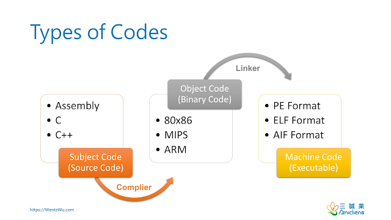
- Software
- Program（存在硬碟的程式）
- Process（被載入RAM執行）
-
按圖施工(寫程式(叫CPU做事)=資料處理（去處理資料）)
- Source Code（電腦語言/程式語言）
- C, C+, C#, Python
- JavaScript
- Assembly
- Compile編譯
- 直譯器
- 編譯器
- 機械語言（CPU指令集）（目的語言/目的程式）
- Program，可以被載入CPU的程式
- Link
- 可執行檔
- Source Code（電腦語言/程式語言）
-
Secure Coding Practices 安全編碼原則
- Validate input 輸入驗證
- Heed compiler warnings 注意編譯器警告
- Architext and design for security policies 安全策略的架構和設計
- Keep it simple 保持簡單
- Default deny 預設拒絕
- Adhere to the principle of least privilege 堅持最小特權原則
- Sanitize data sent to other systems 清理發送到其他系統的數據
- Practice defense in depth 練習縱深防禦
- Use effective quality assurance techniques 使用有效的品質保證技術
- Adopt a secure coding standard 採用安全編碼標準
- Define security requirements 定義安全要求
- Model threats 威脅塑模
物件導向程式設計（OOP）
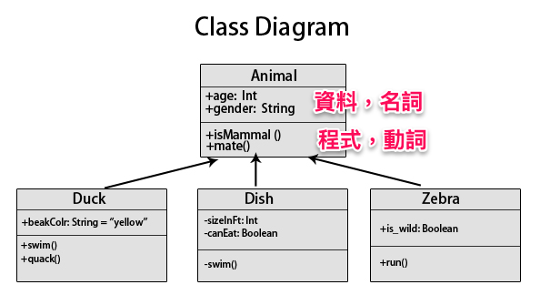
- 物件導向程式設計（英語：Object-oriented programming，縮寫：OOP）
- 將資料及執行該資料的程式封裝成類別，讓人呼叫或調用。但使用者不需要知道該類別內容
- 封裝（資料隱藏，把相關的東西裝在一起，不給人碰）
- 相關，同類東西擺在一起
- Class Diagram
- 類別Class，封裝技術
- 資料（屬性）：主體
- 和處理資料的程式（方法/operations）：功能
- 保護，不讓別人碰到
- 相關，同類東西擺在一起
- 繼承：繼承功能給別人用
- 多形：繼承功能後，拿來改
Testing Phase
- Types of Testing 測試類型
- Black vs White Testing
- 黑箱測試：測試者對於受測標的物一無所知
- 白箱測試：測試者對於受測標的物都知道
- 灰箱測試
- Active vs Passive Testing
- 互動：Interaction vs non-Interaction
- Manual vs Automated Testing
- Tester vs Test Runner/ Harness
- Static vs Dynamic Testing （Software）
- 靜態測試：未執行該軟體（屬Program），放置於硬碟進行測試
- 動態測試：已執行該軟體（屬Process），已被載入記憶體中進行測試
- Black vs White Testing
軟體測試口訣(順序)
- 單元測試
- code review
- 整合測試
- 應用程式介面測試、API測試
- 模糊測試
- 回歸測試
- 系統測試（安全測試、效能測試、壓力測試）
- 驗收測試（UAT）
- 安裝測試
- 合成交易Synthetic Transactions，寫腳本進行監控
- Software Testing Techniques
- Unit Testing（+TDD（測試先行）：先寫單元測試，再寫程式）
- 本機Code Repository
- 公司Code Repository
- Code Review
- 公司Code Repository
- 本機Code Repository
- Code Review
- pair programming結對編程（同儕）（Agile）
- 最高檔code Review
- 即時檢視
- 最高檔code Review
- 提交審查（主管）
- 機器人掃描Code Review
- 正式審查檢視（專家）
- 費根審查Fagan Inspection
- pair programming結對編程（同儕）（Agile）
- Integration Testing整合測試，與其他人的code合併後
- 基本（常見）方式，將所有人的Unit Testing，再跑一次
- Regression Testing回歸測試，測到沒問題
- Interface Testing，介面測試（UI測試、API測試）
- Fuzz Testing，模糊測試，用工具（Fuzzey）隨機動態，產生測試資料，透過使用者或是API介面進行測試（Interface Testing）。容易破壞語意完整性。
- 自定義
- 自動化檢視
- Fuzz Testing，模糊測試，用工具（Fuzzey）隨機動態，產生測試資料，透過使用者或是API介面進行測試（Interface Testing）。容易破壞語意完整性。
- Misuse Case Testing，誤用測試
- Stree Testing，壓力測試，測試系統上限
- Performance Testing，效能測試，在一段壓力下，測試效能狀況
- Security Testing
- 滲透、弱掃
- User Acceptance Testing（UAT），驗收測試
- Installation Testing，安裝測試
- Synthetic Transactions，綜合交易，寫腳本進行監控
- Test Coverage Analysis，測試覆蓋率分析，重點是測試的分母為何
- Unit Testing（+TDD（測試先行）：先寫單元測試，再寫程式）
Maintenance Phase
- 上線維運階段（職責分離）
- 資安人員：漏洞/弱點管理
- 維護Maintenance：開發人員，修功能、修Bug
- 維運operations ：資訊人員，資訊系統的維護，不讓資訊系統出問題（開發人員不能碰線上系統）
RMF & NIST SDLC
NIST System Development Life Cycle，SDLC
* initiation，啟動
* RMF-Categorize Systems：依據impact程度分高中低
* BIA
* PIA
* Development/Acquisition，開發Make/收購Buy
* RMF-Select Controls：依等級進行項次的控制
* RMF-Implement Controls：進行控制
* Implementation/Assessment，實施/評估
* RMF-Assess Controls：評鑑有效性
* Verificaton，內驗，內部驗證正確性
* 認證(Accreditation)
* 指主管機關對某實驗室或驗證機構給予正式認可（授權），證明其有能力執行某特定工作。例如：SGS的食品服務部是經過衛生福利部TFDA認證。
* RMF-Authorize Systems：授權系統上線
* Validation，外確，外部確認有效性
* 驗證(Certification)
* 由中立之第三者確認某一項產品、過程或服務，能否符合規定要求達到一定標準。
* Operations and Maintenance，運營和維護
* Review 操作準備狀態
* RMF-Monitoring Control：持續監測
* 變更管理
* Disposal，除役
* 資訊/資訊系統，最後會進入到除役階段，除了進行硬體設備資源再利用/報廢，或是法律要求的保存，也需對資訊系統所處理的資訊，進行資料消毒 Sanitization，避免資料殘餘 Data Remanence 。
* 資料殘留
* 資料保存政策
* 資料消毒 Sanitization
* Clear 擦除，人員/實驗室可恢復
* Purge. 清除，廠商提供的工具，需送實驗室才能救回
* Destroy. 銷毀，物理性破壞，如碎化
Authorization Decisions：授權決定
* Authorization To Use
* Authorization To Operate，ATO，上線授權
* Common Control Authorization
工程補充
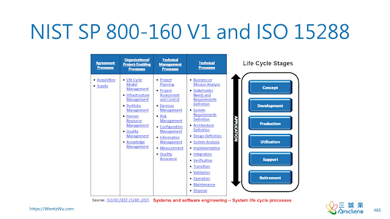
ISO 15288
* Life Cycle Stages
* Concept
* Development
* Production
* Utilization
* Support
* Retirement
* Agreement Processes
* 採購
* Acquisition
* Supply
* Organizational Project-Enabling Processes
* 組織管理專案（整合資源）
* Life Cycle Model Management
* Infrastructure Management
* Portfolio Management
* Human Resource Management
* Quality Management
* Knowledge Management
* Technical Management Processes
* 專案管理
* Project Planning
* Project Assessment and Control
* Decision Management
* Risk Management
* Configuration Management
* information Management
* Measurement
* Quality Assurance
* Technical Processes
* 專業技術
* Business or Mission Analysis
* Stakeholder Needs and Requirement Definition
* System Requirement Definition
* Architecture Definition
* Design Definition
* System Analysis
* Implementation
* Integration
* Verification
* Transition
* Validation
* Operation
* Maintenance
* Disposal
Security Design Principles安全設計原則
- 威脅建模
- 最小許可權
- 深度防禦
- 預設安全設定
- 失效安全
- 職責分離 （SoD）
- 保持簡單
- 零信任
- 通過設計保護隱私
- 信任但要確認
- 共同責任
Security Design Principles安全設計原則
* Saltzer and Schroeder
* Economy of Mechanism
* Fail Safe Defaults
* Complete Mediation
* Open Design
* Separation of Privilege
* Least Privilege
* Least Common Mechanism
* Psychological Acceptability
* Work Factor
* Compromise Recording
* ISO 19249
* Architectural Principles
* Domain Separation
* Layering
* Encapsulatoin
* Redundancy
* Virtualization
* Design Principles
* Least Privilege
* Attack Surface Minimizatoin
* Centralized Parameter Validation
* Centralized General Security Services
* Preparing for Error and Exception Handling
* NIST
* Security Architecture And Design
* Clear Abstractions
* Hierarchical Trust
* Least Common Mechanism
* Inverse Modification Threshold
* Modularity and Layering
* Hierarchical Protection
* Partially Ordered Dependencies
* Minimized Security Elements
* Efficiently Mediated Access
* Least Privilege
* Minimized Sharing
* Perdicate Permission
* Reduced Complexity
* Self-Reliant Trustworthiness
* Secure Evolvability
* Secure Distributed Composition
* Trusted Components
* Trusted Communication Channels
* Security Capability and Intrinsic Behaviors
* Continuous Protection
* Secure Failure and Recovery
* Secure Metadata Management
* Economic Security
* Self-Analysis
* Performance Security
* Accountability and Traceability
* Human Factored Security
* Secure Defaults
* Acceptable Security
* Life Cycle Security
* Repeatable and Documented Procedures
* Secure System Modification
* Procedural Rigor
* Sufficient Documentation
Malicious Software（Malware）
- Viruses：Passive Programs（PGs）
- Multipartite：File and MBR
- Stealth：Operating System
- Polymorphic：Self-modification
- Encrypted
- Worms：Active Porocess
- Trojans：Cloaked PG in Normal PG（程式中藏程式）
- Rogue Antivirus
- Ransomware：Encrypted
- Spyware：Silent malware
- Adware：Advertisements
- Buzzwords
- Pranks：Fun Viruses
- Hoaxes：Rumor
- Backdoor
- Trapdoor / Maintenance Hooks
- Logic Bombs
- Botnets
- Bots（robots）：Controlled agenta
- Zombies：Bod bots
- Bots Master：The Person in Command and Control （C&C or C2） over the botnets.
Identifying Common Vulnerabilities
- Distributed Systems
- Client-based systems
- Server-based systems
- Database systems，RDMS，SQLi
- Cryptographic systems
- Cloud-based systems
- Virtualized systems
- Edge Computing systems，CDN
- 內容分發(可用性)
- 分散性服務，避免單點故障
- 跨境問題(專利、商標、營業秘密、加密法、個資)
Cloud Computing
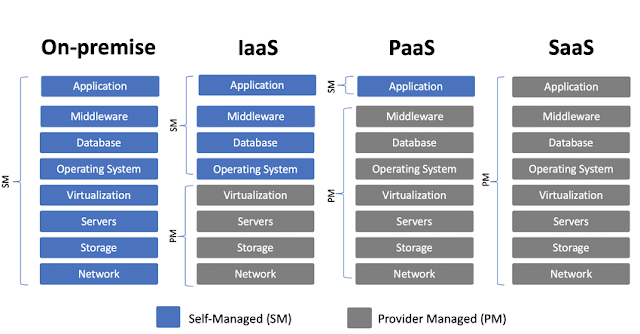
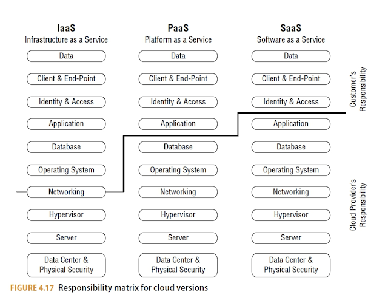
Cloud Computing：運算資源服務化
* Essential Characteristics基本特徵（NIST SP 800-145）
* On-demand self-service：隨選自助服務
* Broad network access：寬頻連接
* Resource pooling：資源池
* Rapid elasticity：快速彈性
* Measured Service：可量測
* ISO 17888
* Multi-Tenancy：多租戶
Service Models
* Software as a Service（SaaS）：使用軟體（服務），直接使用系統，一般使用者
* 雲端的共享責任：Data
* Platform as a Service（PaaS）：程式平台，程式上傳，即可使用，程式設計師
* 雲端的共享責任：Application
* Infastructure as a Service（IaaS）：VM，自己裝作業系統，系統工程師
* 雲端的共享責任：OS
Deployment Modes
* Private Cloud：自己人使用
* Public Cloud：公眾使用
* Community Cloud：特定利害關係人一起使用
* Hybrid Cloud：上述情況混用
Cloud Computing Role
* Cloud Carrier
* Cloud Service Provider，CSP
* Cloud Broker
* Cloud Consumer
* Cloud Auditor
Microservices，微服務
* Containerization，容器
* Serverless，無伺服器
Embedded systems
* Industrial Control Systems（ICS）
* Internet of Things（IoT）
High-Performance Computing（HPC）Systems
各種系統架構.
* 基於客戶端的系統
* 基於服務器的系統
* 數據庫系統
* 密碼系統
* 工業控制系統 (ICS)
* 基於雲端的系統（例如，軟件即服務（SaaS）、基礎架構即服務（IaaS）、平台即服務（PaaS））
* 應用系統
* 物聯網（IoT）
* 微服務
* 運算資源服務化
* 無服務器
* 嵌入式系統
* 計算（HPC）系統
* 邊界計算系統
* 虛擬化系統
Zero Trust零信任
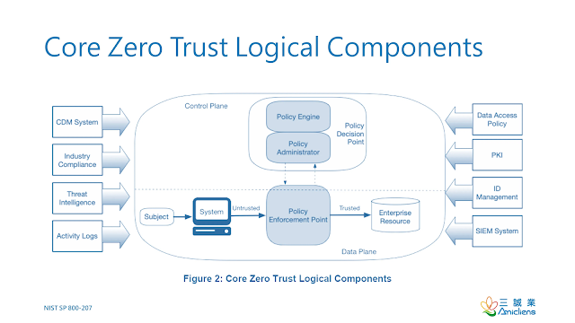
- Zero Trust零信任：不要用網路邊界的概念來信任（來保護資訊資產）
-
以資料為中心，進行更細膩及動態的管制措施，並透明化紀錄各項軌跡、流量
-
Zero Trust簡單說, 就是不要認為內網較安全, 也就是放棄用網路邊界來作資安. Zero Trust重點在保護資料, 必需以資料中心來訂範圍(晝虛擬的邊界), 並對個範圍內的資產, 進行更細緻, 動態及透明的存取控制.
Zero Trust零信任：
* A Cybersecurity Paradigm for Access Control 2.0
* Data-Centric, Fine-grained, Dynamic, and Transparent.
* 訪問控制 2.0 的網絡安全範式
* 以資料為中心、更細部（ABAC）、動態和透明。
* ABAC
* XACML
* Risk-based
傳統上：
* 因內網比較安全，所以就自動信任（繼承）
* inherit繼承
零信任：
* 去邊界化（De-perimeterization）
* 保護資源（資訊），資安
Zero Trust Model
* CSA Software Defined Perimeter（SDP）,2013
* NIST Zero Trust Architecture
* NIST SP 800-207, Aug 2020
Zero Trust：Access Control 2.0
* Security Principles
* Need-to-Know
* Least Privilege
* No inherent Trust
* Give up "Trust, but verify"
* Perimeterless
* Microsegmentation（微分段）
* Software-Defined Network（SDN）
* Continuous Verification
* Verify and never trust
* Network Access Control（802.1X）
* Mutual-Authentication
* Data-Centric
* Applications, Services, Devices, and Networks
* Pepople and Workflows
* Fine-grained
* Criteria-based vs Score-based（NIST）
* Attribute-based vs Risk-based（ISC2）
* Dynamic
* Port knocking
* Single Packet Authorization（SPA）
* Subject, Object, and Environment（ABAC）
* Transparent（Visibility）
* Logging （Accounting）and Recording
* Monitoring and Inspection
密碼學
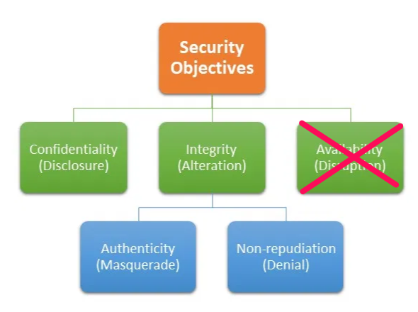
Cyptology目標：
* 機密性：資料不被偷
* 完整性：資料不被串改，資料完整性
* 真實性：傳送來源的真實性
* 不可否認性：傳送雙方的不可否認性
* ~~可用性：~~
布林代數
- And：兩個1，才是1
- OR：只有有出現1，就是1
- XOR⊕：兩個不一樣，才是1
- NOT~：NOT 0 = 1；NOT 1 = 0
- 取餘數 7 MOD 5＝2；7 MOD 10 = 7
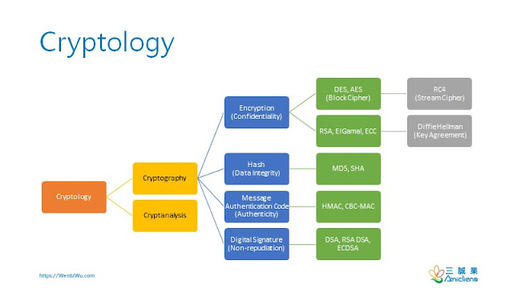
Cryptography：
* Cyptography（防守）
* Encryption（加密）： for Confidentiality機密性
* Component元件
* Plaintext明文
* Cipher加密器；Algorithm（演算法）
* Text-based（字母表，以文字為基礎）
* Substitution Cipher（取代型加密器）
* 凱薩
* ROT-3（位移三位）
* BAD = EDG
* 金鑰：3
* Cipher：位移
* Transposition Cipher（換位型加密器，Permutation Cipher排列加密器）
* 打亂文字位置
* 成員不變，位置改變
* 現代密碼學
* 先取代
* 換位
* 反覆上述步驟，作為一輪，在做很多輪
* Binary-based
* Symmetric 對稱式，同強度128bits，快
* Symmetric Demands，對稱式金鑰數量
* n(n-1)/2
* 10個人要面對其他九個人，同一組人除2
* 金鑰管理問題，數量多
* Block Cipher區塊型
* 切塊，
* DES，Data Encryption Standard（Lucifer），Cipher：Lucifer
* DES-EEE3，三把金鑰
* DES-EDE3，D解密，但金鑰不同
* DES-EEE2，K1=K3，兩把金鑰
* DES-EDE2
* AES，Advanced Encryption Standard（Rijndael），Cipher：Rijndael
* CBC-MAC，最後一次的金鑰使用，雙方約定好的Shared Key（K2）進行加密

* RC6
* Mode：不改變Cipher加密器的狀況下，事前事後都動手腳
* Electronic Codebook（ECB）
* 固定樣態，容易破解，缺點：同樣明文會加密成同樣密文
* 因無加料，所以速度快
* Cipher Block Chaining（CBC）
* 加料：initialization Vector（IV）初始向量，動態亂數產生，進行XOR運算
* 第一次的密文（Cipher Block ）當作第二次的IV，Chaining

* Cipher Feedback（CFB）
* Output Feedback（OFB）
* Counter（CTR）
* Stream Cipher串流型
* 不切塊，
* 適用狀況
* 運算能力不足
* 行動裝置
* 資料形式源源不絕
* RC4（RSA發明）
* TKIP
* Asymmetric 非對稱式，同強度2048bits，慢
* Asymmetric Demands，非對稱式金鑰數量
* n*2
* Public Key Encryptoion
* Key Pair兩把金鑰
* 只能用對應的公鑰及私鑰解密，事先產生公鑰後，傳輸公鑰給人
* Public公鑰：隨便給，給別人加密用（用別人的公鑰加密）
* Private私鑰：保管好，給自己簽章用（用自己的私鑰簽章）
* 加密演算法
* Prime Factorization質因數分解
* RSA（主流）
* Discreate Logarithm離散數學
* Diffie-Hellman，DH
* Key Agreement金鑰協議
* 非事先產生
* 雙方協議後產生
* 金鑰未在網路傳輸
* EIGmal Cryptograply，REC，密文為明文的兩倍
* Elliptic-Curve Cryptograply，ECC，短小精幹（比RSA更短、快）
* Key金鑰（啟動器）；Securt Key（密鑰）
* 加密Encryption及解密Decryption
* 同一把Key：對稱式加密（與非對稱式加密互補，搭配使用）
* 不同把Key：非對稱式加密（與對稱式加密互補，搭配使用）
* 隨機、亂碼

* Key Exchange
* out-of-band
* Public Key Encryptoion
* Key Pair兩把金鑰
* Public公鑰：隨便給，給別人加密用（用別人的公鑰加密）
* Private私鑰：保管好，給自己簽章用（用自己的私鑰簽章）
* Diffie-Hellman，DH
* Key Agreement金鑰協議
* 非事先產生
* 雙方協議後產生
* 金鑰未在網路傳輸

* Ciphertext：密文
* 好的加密器（難破解），達成Hash的效果（唯一值）
* 金鑰（Securt Key）任何變更，密文完全改變，Confusion混淆
* 明文（Plaintext）任何變動，密文完全不一樣，Diffusion擴散
* Cipher Operation
* Confusion（S-Box or Substitution Cipher），混淆能力
* Diffusion（P-Box or Transpostion Cipher or Permutation Cipher），擴散能力

-
現代密碼學思維：只要把金鑰保護好，其他加密器、演算法透明公開、密文偷走也無所謂。
- The Kerckhoff Principle：A cryptographic system should be secure even if everything about the system, except the key, is public knowledge.
- 克爾克霍夫原則：一個加密系統應該是安全的，即使關於系統的一切，除了密鑰，都是公共知識。（即使關於系統的所有內容（除了密鑰之外）都是公共知識，密碼系統也應該是安全的 ）
-
Well-Know Cipher：
- DES，Data Encryption Standard（Lucifer），NIST訂定，美國國家加密標準（第一代），IBM發明。
- Cipher：Lucifer
- AES，Advanced Encryption Standard（Rijndael），NIST訂定，美國國家加密標準（取代DES），海選
- Cipher：Rijndael
- DES，Data Encryption Standard（Lucifer），NIST訂定，美國國家加密標準（第一代），IBM發明。
-
Hash（雜湊（哈希））：for Data Integrity資料完整性
- 不需要Key，任何資料都可以算出一個雜湊值（Hash，指紋）
- 特性
- Unique：唯一值
- Irreversible：不可逆，單向one way
- Fixed length：固定長度
- Fingerorint/Digest/Chechsum
- MD5
- SHA
-
Message Authentication Code，MAC（訊息驗證碼）：for Source Authenticity來源真實性
- 真實性：資料是真的，來源也是真的
- 資料完整性，沒被改過：資料是真的
- 傳送方的身份也是真的
- 本質上類似雜湊值
- 用加密器Cipher算，CBC-MAC
- 用雜湊Hash技術，HMAC（Hash-based MAC）
- 真實性：資料是真的，來源也是真的
-
PKI，Public Key Infrastructure（數位憑證基礎架構）
- 數位身分證：有寫名字的公鑰
- Certificate Authority（CA）：負責發證
- Registration Authority（RA）：負責收件（註冊）
- Validation Authority（VA）：查詢憑證有效性
- 憑證的有效性
- 憑證期限是否到期
- 憑證鏈，中間有一憑證失效，即失效
- 憑證是否已被廢置
- 線上憑證狀態協定（英語：Online Certificate Status Protocol，縮寫：OCSP）是一個用於取得X.509數位憑證復原狀態的網際協定
- 憑證吊銷列表（英文：Certificate revocation list，縮寫：CRL，或譯作憑證廢止清冊）是尚未到期就被憑證頒發機構吊銷的數位憑證的名單。這些在憑證吊銷列表中的憑證不再會受到信任。
- 格式：X.509
- 憑證生命週期
- Generation：隨機性，熵（Entropy隨機程度的單位）
-
- 產生金鑰對: 即public與private key
-
- 產生憑證申請檔(CSR): subject, public key, digital signature等
-
- 提交CSR
-
- CA核準後發放憑證(certificate)
-
- 安裝及使用憑證
-
- Sotrage：儲存
- Distribution：發送
- Rotation：汰換
- Out-of-band
- Key Exchange
- Deternined
- Agrees
- Public Key Infrastructure
- Escrow：代管
- Duo Control
- M Of N Control
- Destruction：銷毀
- Generation：隨機性，熵（Entropy隨機程度的單位）
-
簽章
- 電子簽章
- 筆跡簽名(生物辨識)
- 數位簽章
- 憑證（密碼學）
- 電子簽章
-
數位簽章流程：
其他加密補充
-
One-Time Pad，OTP，密碼學演算方式，號稱牢不可破，金鑰跟明文一樣長（隨機選出和明文 m 一樣長的密鑰 ）
-
TPM（Trusted Platform Module）
-
HSM（Hardware security module）
-
Digital Envelope
- S/MINE
- PGP（Pretty Good Privacy）
-
Steganography（隱碼術）：Null / Concealment Cipher
- 藏頭詩
- 藏在圖片（像素）
-
Quantum
- Quantum Cryptography（Quantum Key Distribution），藍隊，量子密碼學
- Quantum Computing（Integer Factorization），量子運算學
-
破密Cryptanalysis
- 金鑰被猜到
- 密文解密，被還原出任何有意義的資料
- Work factor（破解密碼的代價）
- The time and effort to break a cryptographic system
- 破解密碼系統的時間和精力
- Key Cluster金鑰叢集：不同金鑰產出同一密文
- Cyptanalysis（攻擊）（破密）
- Attack Scenarios（星巴克，有本事你去破）
- Ciphertext Only
- Know Plaintext（weaker codes）
- Chosen Plaintext，中途島
- Chosen Ciphertext（Key）
- Attack Approaches
- Analytic Attack（Algorithm）
- Statistical Attack（Cryptosystem）
- Implementation Attack（Software）
- Attack Techniques
- Brute Force暴力攻擊
- Key Space：所有組合的可能性
- Birthday Attack（Hash）
- "Meet" in the Middle（2DES）
- Frequency Analysis頻率分析
- Brute Force暴力攻擊
- Attack Scenarios（星巴克，有本事你去破）
網路工程
- 架安全的網路
- 提到工程
- 時時都安全 (可以是生命週期，也可以是 狀態)
- 處處都安全
- 所以要從架構著手
OSI 七層
| Layer | 名稱 | 關鍵 | 資安關注議題 |
|---|---|---|---|
| 7 | Application | 應用程式 | FTP 明文傳送、DNS cache poisoning、流氓 DHCP |
| 6 | Presentation | 編碼 / 壓縮 / 加解密 | Brute Force、Meet in the middle (2DES)、Frequency Analysis、Birthday Attack、彩虹表 |
| 5 | Session | 全雙工/半雙工/單工 | Access Token 劫持 (中間人、XSS 跨站攻擊-違反同源政策) |
| 4 | Transport | 保證送達、不保證送達 | UDP : Fraggle attack ; TCP : SYN Flood Attack 、 聖誕樹攻擊 |
| 3 | Network Layer | (定址)Addressing 、(選徑)Routing | Ping of Death 、 Smurf Attack 、TTL fingerprinting / footprinting 、淚珠攻擊 、 流氓路由器 |
| 2 | Data Link Layer | Media Access Control(MAC) 、 Logic Link Control(LLC) | ARP cache poisoning、MAC flooding |
| 1 | Physical | 線材、接頭、訊號、傳輸方式 | 訊號衰減、干擾、竊聽、破壞 |
OSI與TCP/IP
* Layer 7 Application Layer：服務應用
* TCP/IP Layer：Application
* Protocol Data Unit，PDU：Data / Message
* Layer 6 Presentation Layer：編碼及加密
* TCP/IP Layer：Application
* Protocol Data Unit，PDU：Data / Message
* Layer 5 Session Layer：認證及授權的生命週期
* TCP/IP Layer：Application
* Protocol Data Unit，PDU：Data / Message
* Layer 4 Transport Layer：服務端口
* TCP/IP Layer：Transport
* Protocol Data Unit，PDU：Segment
* Layer 3 Network Layer：定址和路由
* TCP/IP Layer：Internet
* Protocol Data Unit，PDU：Packet
* Layer 2 Data Link Layer：相鄰兩點設備連結的控制
* TCP/IP Layer：Link
* Protocol Data Unit，PDU：Frame
* Layer 1 Physical Layer：物理設備的標準及特性：如MAC/網路卡/網路線
* TCP/IP Layer：Link
* Protocol Data Unit，PDU：Bit
TCP/IP 架構，元素、元素與元素之間的關係
OSI
-
實體層Physical layer，MAC/網路卡/網路線
-
Repeater
-
Media線材（媒介）
- 有線
- 同軸
- 粗（傳輸距離約500公尺）
- 細（RG-58）（傳輸距離約100公尺）
- 銅線（雙絞線）
- 包覆，STP（鋁箔，防止外部干擾）
- CAT-3
- CAT-4
- CAT-5（傳輸距離約100公尺）
- CAT-5e
- 未包覆，UTP
- RJ-45，Register Jacket-45，接頭
- 包覆，STP（鋁箔，防止外部干擾）
- 光纖
- 單模
- 多模
- 價格
- 光纖>STP>UTP
- 傳輸距離
- 光纖>粗銅軸>銅線=細同軸
- 長距離門檻
- 費用
- 執照（一類電信）
- 干擾
- 串音Cross Talk
- 端點Near End容易互相干擾
- 訊號衰減
- 放大器（擴大器）（類比）
- Repeater (數位)
- 串音Cross Talk
- 同軸
- 無線
- 電磁波
- NFC and RFID
- Bluetooth and Zigbee 藍芽
- Wi-Fi （頻譜2.4G/5GMz）（1,6,11無重複）
- Li-Fi 光傳輸
- Cordless Phones（DECT）
- Cellular Netwoks（4G,5G）
- Satellite（Starlink）
- 常見攻擊
- 無線網路的攻擊
- War Driving
- 開車繞一圈蒐集有多少基地台
- 基地台使用哪種協定
- 是否使用預設密碼
- 開車繞一圈蒐集有多少基地台
- War Chalking
- 將蒐集來的做記號(Ex.阿里巴巴做記號)
- Evil Twin (完全模仿你,訊號強就會連結過來)
- 如公共基地台 (用相同的 SSID 與相同金鑰)
- 將筆電模擬成 AP
- 如公共基地台 (用相同的 SSID 與相同金鑰)
- 藍芽攻擊
- 訊號側錄（中間人攻擊）
- War Driving
- 無線網路的攻擊
- 電磁波
-
WAN
- 區域網路LAN與廣域網路WAN的概念
- LAN：自己拉線拉得到的，基本上都算區域網路的範圍
- WAN：
- Leased Line（專線）
- 貴
- T1
- 美規
- E1
- 歐規
- Circuit Switching電路交換
- 佔線問題
- PSTN
- 電話網路
- 類比
- ISDN
- Packet Switching封包交換
- Switched Virtual Circuits（SVCs）
- Permanent Virual Circuits（PVCs）
- X.25
- Frame relaed
- 區域網路LAN與廣域網路WAN的概念
-
Signal訊號
- Analog：連續波長，取高低峰，作為0和1
- 訊號衰減改善
- 放大器（擴大器）（類比）
- 訊號衰減改善
- Digital：0和1的訊號
- 訊號衰減改善
- Repeater (數位)
- 訊號衰減改善
- Analog：連續波長，取高低峰，作為0和1
-
Transmission傳輸
- Baseband 基頻（有線）: 如單音、solo 獨唱 ，一個頻率
- Broadband 寬頻（無線） : 如合唱、和弦 多個頻率
-
Network Topology（形狀）
- Bus
- Star
- Ring
- Mesh
- Tree
- Point-to-Point
- 有線
-
-
資料鏈結層Data Link Layer
-
Media Access Control（MAC）
- 搶資源
- 先搶先贏
- CSMA/CD（乙太網路）
- 碰撞
- 偵測到重送
- 碰撞
- CSMA/CA（無線網路）
- 碰撞
- 傳資料之前先聽，有人傳就暫停
- 碰撞
- 次序（輪流）（乙太網路/無線網路）
- ToKing Ring
- 搶資源
-
Logical Link Control（LLC）
- 流量控制
- 錯誤控制
-
Common Attacks
- ARP Attacks
- MAC Spoofing
- DHCP Spoofing
- Virtual LAN Hopping
- CAM Table Overflows
- Spanning Tree Protocol Attacks
- CDP/LLDP Reconnaissance
-
Link VS Route (Path)
- Link : 相鄰兩點 Point to Point
- Route (Path) : 端點到到端點 End Point - to - End Point ，經過很多點
- Ex. E2E 加密,全程都都加密
- 放大器：Bridge
-
-
網路層Network Layer
- Router
- Addressing：定址，針對網路/電腦做編碼
- IPv4
- 32 bit
| 2^7^ | 2^6^ | 2^5^ | 2^4^ | 2^3^ | 2^2^ | 2^1^ | 2^0^ |
| -- | -- | -- | -- | -- | -- | -- | -- |
| 128 | 64 | 32 | 16 | 8 | 4 | 2 | 1 | - CIDR（Classless Inter-Domain Routing） 表示法
- 192.168.0.1 /25
- 111111111 . 11111111 . 11111111 . 1000 0000
- 255.255.255.128
- 32 bit
- IPv6
- 128 bit
- 「：」冒號分隔
- IPv4
- Routing：選一條路把資料流出去（路由表）
- Interior Gateway Protocol（IGP）
- Distance Vector
- RIP
- Link State
- OSPF
- Distance Vector
- Exterior Gateway Protocol（EGP）
- Path Vector
- BGP
- Path Vector
- Controlling
- ICMP
- Unicast
- ICMP
- IGMP
- Broadcast
- Multicast
- Interior Gateway Protocol（IGP）
- 請簡述路由表的結構
- Network Destination：目的網段
- Netmask：目的網段的子網路遮罩
- Gateway：常見指default Gateway或不同介面的default Gateway
- Interface：本機介面上的IP
- Metric：計算路由的指標，通常越小，預設會先行
-
傳輸層Transport Layer
- Firewall
- Transport（程式傳輸）
- 進行資料的傳遞
-
TLS/SSL協定訊息：三方交握後，
- Client會傳遞一組特殊的Client Hello extensions
- SSL Protocol Version
- Session ID
- List of Cipher Suites，列出支援的加密方式
- Server會回應Server Hello extensions
- SSL Protocol Version
- Session ID
- Selected Cipher：選擇本次Sesson所用的加密方式
- 提供Server Certificate
- Client Certificate Requset（Optional），依服務是否要求雙向加密
- 最後Client會驗證該Server Certificate後，進行資料傳輸。
- Client會傳遞一組特殊的Client Hello extensions
-
Common Attacks
- 最常見的攻擊就是將Certificate進行置換，進行中間人攻擊
-
通訊埠port number
| Port | 服務 | 補充 |
| -- | -- | -- |
|7 | echo | Echo 服務 |
|20 | ftp-data | FTP 資料連接埠 |
|21 | FTP | 檔案傳輸協定(FTP)連接埠；有時由檔案服務協定(FSP)所使用 |
|22 | SSH | Secure Shell (SSH) 服務 |
|23 | telnet | Telnet 服務 |
|25 | smtp | Simple Mail Transfer Protocol (SMTP) |
|53 | DNS | 網域名稱服務 |
|67 | bootps | Bootstrap 協定 (BOOTP) 服務，也由動態主機配置協定 (DHCP) 服務所使用 |
|68 | bootpc | Bootstrap (BOOTP) 用戶端；也由動態主機配置協定 (DHCP) 用戶端所使用 |
|69 | TFTP | 細瑣檔案傳輸通訊協定(TFTP) |
|80 | HTTP | 用於全球資訊網(WWW)服務的超文字傳輸通訊協定(HTTP) |
|88 | kerberos | Kerberos 網路認證系統 |
|110 | pop3 | 郵局通訊協定第三版 |
|115 | SFTP | 安全的檔案傳輸協定(SFTP)服務 |
|123 | NTP | 網路時間協定(NTP) |
|143 | IMAP | 網際網路訊息存取協定 (IMAP) |
|161 | SNMP | 簡易網路管理協定 (SNMP) |
|162 | snmptrap | SNMP 的 Traps |
|389 | ldap | 輕量級目錄存取協定 (LDAP) |
|443 | HTTPS | 安全的超文字傳輸通訊協定 (HTTP) |
|500 | isakmp | 網際網路安全協會與金鑰管理協定 (ISAKMP) |
|749 | kerberos-adm | Kerberos 第五版 (v5) ‘kadmin’ 資料庫管理 |
|750 | kerberos-iv | Kerberos 第四版 (v4) 的服務 |
-
會議層Session Layer（User Session）
- User登入到登出的這段期間（互動）
- Service
- Authentication
- Authorization
- Session restoration
- Protocols
- PAP
- RPC
- NetBIOS
-
展現層Presentation Layer
- 編碼Encoding
- ASCII
- UTF8/Unicode
- BASE64：將二進位檔案Binary date，轉換成TEXT，以利傳輸
- 壓縮
- Content-Encodeing：gzip
- Content-Encodeing：Compress
- 加密
- HTTPS
- AES
- 編碼Encoding
-
應用層Application Layer
- DNS
- UDP53，用戶端與DNS Sever溝通（查詢）
- TCP53，Primary DNS Server 與 Secondy DNS之間進行Zone Transfer
- HTTP
- Request
- Response
- 200 OK
- FTP
- Text
- TFTP
- 不需身份驗證
- SMTP/POP/IMAP
- DHCP
- BOOTP
- 用網卡開機
- DNS
- Converged Protocols 融合協議
- iSCSI：把原來只用於本機的SCSI協定透過TCP/IP網路傳送，進行更彈性的儲存技術應用
- Initiator（iSCSI Client）
- Target（Storage）
- Host Bus Adapter（HBA）
- VoIP：經由網際網路來進行電話或多媒體通訊
- SIP，註冊用
- RTP，傳輸用
- iSCSI：把原來只用於本機的SCSI協定透過TCP/IP網路傳送，進行更彈性的儲存技術應用
Firewall
- Firewall Technologies
- Inspection
- Packet Filtering（Stateless：IP）
- Circuit-level（Stateful：TCP）
- Deep Pack Inspection（Payload）
- Proxy
- Application Proxy
- Dedicated Proxy Servers
- Next-Generation Features
- Web Application Firewalls
- Network Access Control / Protection （NAC / NAP）
- Virtual Private Networking
- Unified Threat Management（UTM）
- Firewalls for Virtual Infrastructures
- Zero Trust
- 不只是用網路區隔
- 用軟體定義邊界
- Inspection
IPsec（非協定而是框架或標準）
- Network Layer
- Features 功能
- Data Integrity Protection，資料完整性保護
- Data Origin Authentication，資料源驗證（真實性）
- Anti-replay Protection 防止重放攻擊
- Confidentiality 機密性
- Modes（用途）
- Transport Mode
- End to End
- Tunnel Mode
- WAN
- Gw to Gw
- Transport Mode
- Protocols（封裝法）
- ISAKMP金鑰管理協定（框架）
- 金鑰交換協議
- IKEv1
- IKEv2
- IKEv1簡化
- ESP（加密）
- 完整性
- 機密性
- AH（未加密）
- 完整性
- 金鑰交換協議
- Application
- VPN
- LAN
- CIA
- 保護完整性Integirty
- 依通訊協議，確認是否有加密性
- ISAKMP金鑰管理協定（框架）
Wireless
- Wireless
- 802.1X Roles
- Supplicant(用戶端)
- Authebticator（AP）
- Authentication Server（Rsdius Server）
- Mode
- Ad Hoc Mode
- Peer to Peer
- Infrastructure Mode
- Access Point
- Ad Hoc Mode
-
Wireless Security
|Generation | 第1代 | 1.5代 | 第2代|
| -- | -- | -- | -- |
|Features | WEP | WPA | WPA2|
|標準 | 802.11 | 802.11i Draft | 802.11i|
|驗證 | Open System Authentication / SharedKEY | PSK/WAP/802.1X | PSK/EAP/802.1X|
|Cipher | RC4 | RC4 / TKIP (Firmware 升級) | AES/CCMP|
|IV 長度 | 24 Bits | 48 Bits | 48 Bits|
|Key/Size | 40/104 bits | 128 Bits | 128 Bits|
|Integrity | CRC32 | MIC | CCM| -
Wireless Attacks
- Wi-Fi Attacks
- War Driving
- War Charlking
- Evil Twin
- Bluetooth Attacks
- Bluesnarfing
- 使攻擊者能夠利用較舊的（大約在2003年）設備中的固件漏洞來訪問支持Bluetooth的設備。這種攻擊會強制與藍牙設備建立連接，從而允許訪問存儲在設備上的數據，包括該設備的國際移動設備身份（IMED）。IMEI是每個設備的唯一標識符，攻擊者可能會將其用於將所有傳入呼叫從用戶設備路由到攻擊者設備。
- Bluejacking
- 藍牙劫持是在支援藍牙的行動裝置（如手機）上進行的攻擊。攻擊者通過向啟用藍牙的設備的使用者發送未經請求的消息來發起劫持。實際消息不會對使用者的設備造成傷害，但可能會誘使用戶以某種方式做出回應或將新聯繫人添加到設備的通訊簿中。此郵件發送攻擊類似於針對電子郵件用戶進行的垃圾郵件和網路釣魚攻擊。當用戶啟動對出於有害意圖發送的藍牙劫持消息的回應時，劫持可能會造成傷害。
- Bluebugging
- 利用某些較舊（大約在2004年）藍牙設備的固件中的安全漏洞來訪問該設備及其命令。此攻擊在不通知用戶的情況下使用設備的命令，從而使攻擊者可以訪問數據，撥打電話，竊聽電話，發送消息以及利用設備提供的其他服務或功能。
- Car Whisperer
- 是由歐洲安全研究人員開發的一種軟件工具，該工具利用了汽車中安裝的免提藍牙汽車套件中標準（非隨機）密碼的使用。Car Whisperer軟件允許攻擊者向車載套件發送音頻或從車載套件接收音頻。攻擊者可以將音頻傳輸到汽車的揚聲器或從汽車中的麥克風接收音頻（竊聽）。
- Denial of Service
- 與其他無線技術一樣，藍牙容易受到DoS攻擊。影響包括使設備的藍牙接口無法使用以及耗盡設備的電池。這些類型的攻擊並不重要，並且由於使用藍牙所需的接近性，通常只需移開範圍即可輕鬆避免。
- Fuzzing Attacks
- 藍牙模糊攻擊包括將格式錯誤或其他非標準數據發送到設備的藍牙無線電，並觀察設備的反應。如果設備的運行因這些攻擊而減慢或停止，則協議棧中可能存在嚴重的漏洞。
- Pairing Eavesdropping
- PIN /舊式配對（藍牙2.0及更早版本）和低能耗的舊式配對容易受到竊聽攻擊。收集所有配對幀的成功竊聽者可以在給定足夠的時間的情況下確定一個或多個秘密密鑰，從而允許可信設備模擬和主動/被動數據解密。
- Secure Simple Pairing Attacks
- 有多種技術可以迫使遠程設備使用Just Works SSP，然後利用其缺乏MITM保護的功能（例如，攻擊設備聲稱它沒有輸入/輸出功能）。此外，固定的密鑰也可以使攻擊者也可以執行MITM攻擊。
- Bluesnarfing
- Side-channel Attacks
- Power Consumption
- Timing information
- Electromagnetic emissions
- Acoustic（Sound）emissions
- Control Zone against TEMPEST
- Faraday cage
- White noise
- Wi-Fi Attacks
- DOS Attacks
- Ping of death：malformed ping
- LAND：Source and destination loop
- Buffer overflow attack：使資料超過了處理程式回傳堆疊位址限制的範圍時，程式出現的異常操作
- SYN flooding：flood of TCP/SYN
- Teardrop：mangled IP fragments
- Smurf：flood of spoofed ICMP
- Fraggle：UDP variant of Smurf
Data Center Security Concerns
| 位址管理 Site Management | 周邊安全 Perimeter Security | 建築安全 Facility Security |
|---|---|---|
| 選址Site Selection | Gates and Fences 大門和圍欄 - Barriers障礙 - Fences圍欄 - Gates大門 - Walls牆 |
Walls（Access Abuse）牆壁（存取濫用） - Masquerading偽造證件 - Piggybacking熟人夾帶 - Tailgating尾隨 |
| 透過環境設計來犯罪防治(透過大環境特性) - 天然 - 刻意營造 -- 圓環:不讓車直接衝向大門 |
Lighting照明 - Types of light system光系統類型 -- Continuous lighting連續照明- Type of light光的類型 -- Fluirescent lights螢光燈 |
Doors - Mantraps陷阱 -- 兩段式刷卡 - Turnstiles旋轉門 -- 一次只能進出一位 |
| Escort and Visitor Control 護送和訪客控制 | 周邊入侵偵測Perimeter Intrusion Detection | Keys鑰匙 - Locks 鎖 - Safes保險箱 - Vaults金庫 |
| Awareness Training 意識訓練 | CCTV | Windows窗戶 - Type of Glass -- Tempered Glass鋼化玻璃：鋼化擋風玻璃不會破碎成大而鋒利的碎片 |
| Emergency Response 緊急應變 | Alarms | Wiring接線 -- Wiretapping電話竊聽 -- Eavesdropping隔牆竊聽 -- Sniffing嗅探 -- Man-in-the-Middle中間人 |
| HVAC空調：冷熱通道 | ||
| Ceilings 天花板and Flooring地板 - 挑高天花板 - 高架地板 |
||
| Power Supplies電力 - Power Loss -- Fault瞬斷：故障Fault，瞬間斷電- Power Degradation - Sag or Dip低壓：衰變Sag，瞬間低壓- Power Excess -- Spike突波：穗 Spike 瞬間高壓 |
||
| Water and Gas Lines水和瓦斯管線 | ||
| Fire Decterction and Suppression - Fire -- Decterction - Fire Suppression -- Water Suppression Systems，水抑制系統
--- Gas Discharge System，氣體排放系統
|
常用名詞解釋
- 信任路徑(Trusted Path)：用戶（利用輸入設備）可以直接與資訊系統的安全功能進行安全連線的一種機制（進行帳號驗證前，確保通道安全的方式）
- "一台電腦上," subject跟security kernel直接互動的溝通管道. 例如, NT 4要按ctrl+alt+del才能顯示登入話面, 將帳號及密碼傳輸給security kernel作驗證.
- 進行帳號驗證前，確保通道安全的方式
- 本機，如，Ctrl+Alt+Del
- 遠端，如SSH
- 進行帳號驗證前，確保通道安全的方式
- "一台電腦上," subject跟security kernel直接互動的溝通管道. 例如, NT 4要按ctrl+alt+del才能顯示登入話面, 將帳號及密碼傳輸給security kernel作驗證.
- 隱蔽通道(Covert Channel)：一個意外或未經授權的系統內部通道，使兩個合作實體能夠以違反系統安全政策但不超過實體訪問授權的方式傳輸資訊。
- 分storage及timeing二種形式, 即透過storage或timing方式傳輸資料的非授權管理.
- 側通道(Side Channel)：基於從電腦所產生的物理設計中獲取的資訊（聲音、功率、光學等），並使用這些資訊來反向工程電腦正在執行的操作。
- 泛指因為聲音, 震動, 電壓變化, 或電磁波外溢所導致洩密的管道.
- 側通道(side-channel)攻擊是針對硬體的攻擊, 常見的是時序分析及錯誤分析(故意製造錯誤).
- 信任復原(Trusted Recovery)：確保在系統故障後不受影響的恢復能力
- 系統失效時, 亦能回復安全狀態的機制. 常見的實作有, windows的安全模式, 安裝程式失敗時的自動復原, 及應用程式當掉時的自動重啟(及回復資料).
- 手動復原（安全模式）
- 自動復原（如硬碟磁區重算）
- 自動復原且資料不會丟（如Word當機重新復原）
- 功能性復原
- 系統失效時, 亦能回復安全狀態的機制. 常見的實作有, windows的安全模式, 安裝程式失敗時的自動復原, 及應用程式當掉時的自動重啟(及回復資料).
- 物件重用(Object Reuse)：在確保存儲介質上沒有殘留數據後，重新分配和重複使用包含一個或多個物件的存儲介質。